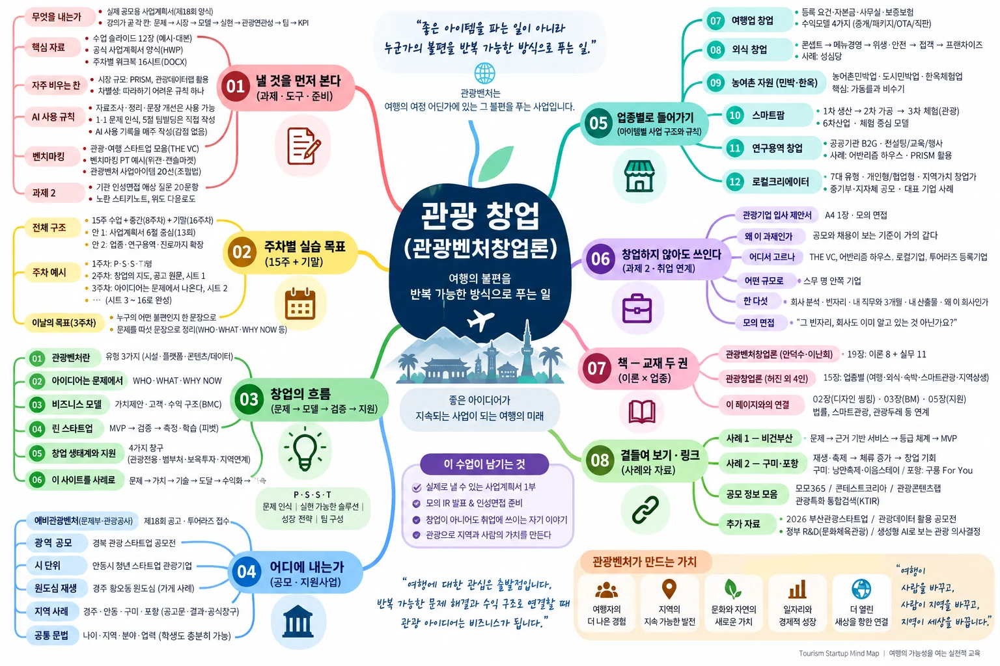
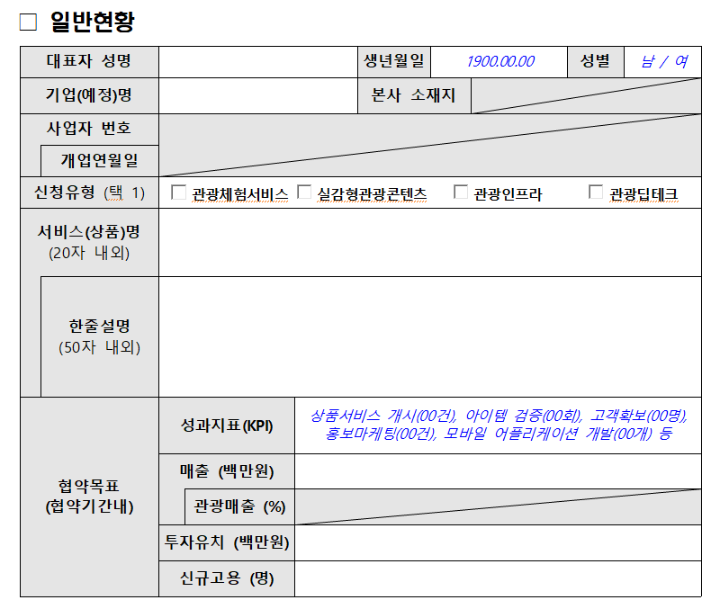
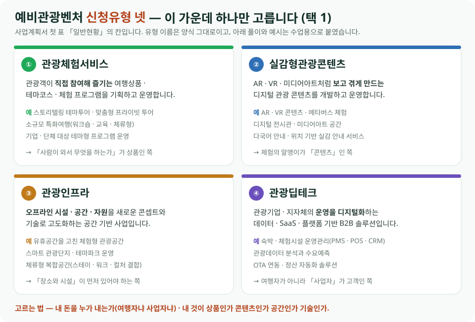
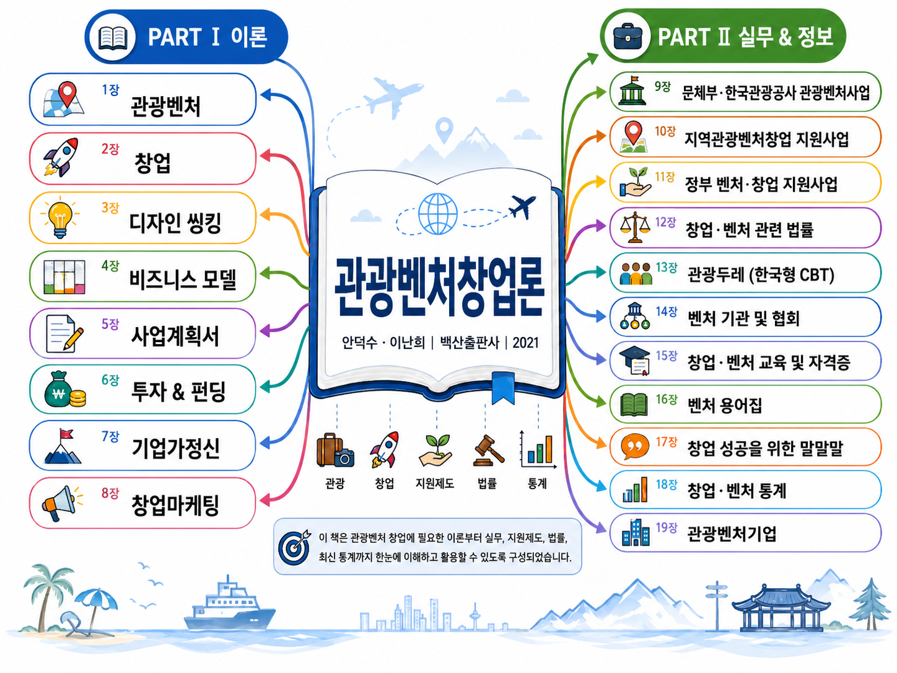
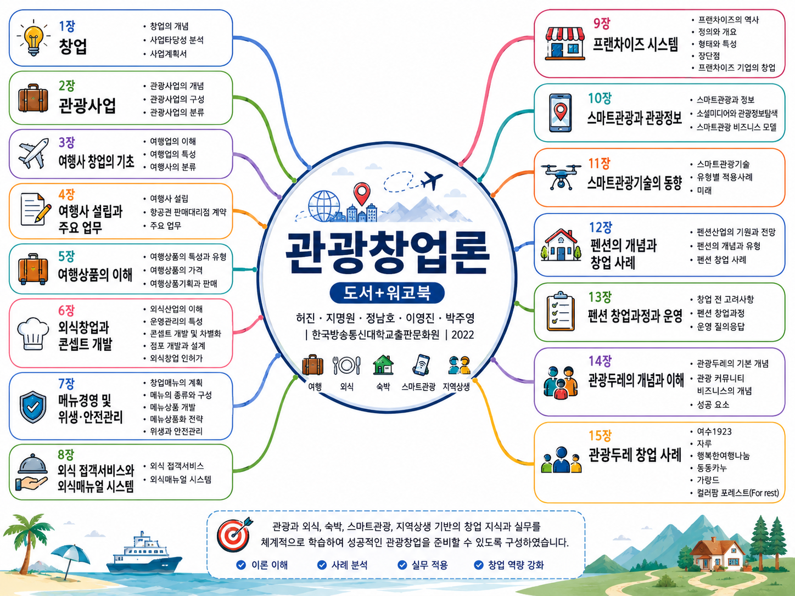

출석부 수강 13명 · 1~16주 · 빈칸은 아직 오지 않은 수업 · 회차마다 출석 + 결석 = 13으로 검산
| 이름 | 9/11주 | 9/82주 | 9/153주 | 9/224주 | 9/295주 | 10/66주 | 10/137주 | 10/208주 · 중간 | 10/279주 | 11/310주 | 11/1011주 | 11/1712주 | 11/2413주 | 12/114주 | 12/815주 | 12/1516주 · 기말 | 출석 |
|---|---|---|---|---|---|---|---|---|---|---|---|---|---|---|---|---|---|
| 고은서 | 결석 | ○ | ○ | 결석 | 2/4 | ||||||||||||
| 김다애 | ○ | ○ | ○ | ○ | 4/4 | ||||||||||||
| 김대호(취업계) | ○ | – | – | – | 1/4 | ||||||||||||
| 김재윤 | 결석 | 결석 | ○ | 결석 | 1/4 | ||||||||||||
| 김준호 | 결석 | 결석 | 결석 | ○ | 1/4 | ||||||||||||
| 김한철 | ○ | ○ | ○ | ○ | 4/4 | ||||||||||||
| 김현민(취업계) | – | – | – | – | 0/4 | ||||||||||||
| 박상준 | ○ | ○ | ○ | ○ | 4/4 | ||||||||||||
| 박준영 | 결석 | ○ | ○ | ○ | 3/4 | ||||||||||||
| 서용주 | 결석 | ○ | ○ | ○ | 3/4 | ||||||||||||
| 이영훈 | 결석 | ○ | ○ | ○ | 3/4 | ||||||||||||
| 임준혁 | ○ | 결석 | ○ | ○ | 3/4 | ||||||||||||
| 차진희 | ○ | ○ | ○ | ○ | 4/4 | ||||||||||||
| 출석 · 결석 | 6 · 7 | 8 · 5 | 10 · 3 | 9 · 4 | 33 |
(취업계) 학생의 빠진 칸은 「결석」 대신 – 로 적었습니다(맨 아래 결석 수에는 들어 있습니다).
9/1에는 공식 출석부에 없는 황현종 · 김기동도 출석했습니다(위 13명 검산에서는 뺐습니다).

창업은 "좋은 아이템을 파는 일"이 아니라 "누군가의 불편을 반복 가능한 방식으로 푸는 일"입니다.
관광벤처는 그 불편이 여행의 여정 어딘가에 있는 사업입니다.
좋은 자원, 깊은 해설, 똑똑한 데이터가 있어도 그것을 "지속되는 사업"으로 묶지 못하면 여행은 취미로 남습니다.
관광의 아이디어를 벤처로 세우는 법 — 문제 정의부터 비즈니스 모델, 시장 검증까지 살펴봅니다.
파트01주차별 실습 목표매주 무엇을 손에 남기고 나가는가 — 그날의 목표와 채울 워크북 시트를 한 칸씩 적었습니다. 이번 주 것만 펼쳐 두고 나머지는 접어 두십시오.
1주차9월 1일(화) 수업 — 사업계획서는 네 칸입니다 · P · S · S · T
공고마다 서식이 조금씩 다르지만 묻는 것은 거의 같습니다. 이 네 칸의 순서가 곧 심사자가 읽는 순서이고, 앞 칸이 흔들리면 뒤 칸은 읽히지 않습니다 — 문제가 분명하지 않으면 아무리 좋은 솔루션도 「그래서 왜?」로 되돌아옵니다.
영상으로 · P 칸 하나만 뜯어보기
- 무엇을 보는가네 칸 중 첫 칸(문제 인식)만 놓고 예비창업패키지 실제 사업계획서를 문단 단위로 뜯는 영상입니다.
- 왜 우리 것인가부처와 사업은 다르지만 묻는 것은 관광벤처 양식의 「1-1 문제 인식」과 같습니다 — 위 과제 1의 첫 칸을 쓰기 전에 한 번 보십시오.
- 보면서 확인할 것① 문제를 몇 번째 문장에서 특정하는가 · ② 근거로 무엇을 들고 왔는가(아래 「P에 통계가 없다」와 겹칩니다).
- 요약 슬라이드이 영상을 슬라이드로 옮기고 말하듯 대본을 붙인 수업용 자료입니다 — 아래에서 내려받습니다.
- 슬라이드에 든 것Problem 파트 여섯 가지(창업동기 · 문제정의 · 객관적 증거 · 대체제 · Unmet Needs · 시장기회), 설문보다 인터뷰가 강한 이유, 문제와 해결방안을 1:1로 맞추는 법, TAM–SAM–SOM 산출근거 쓰는 법(“SOM 300억”이 아니라 목표고객 30만 × 연 10만원).
- 관광벤처 수업 적용“안동에는 관광정보가 부족하다”가 왜 약한 문제정의인지, 같은 것을 어떻게 고쳐 쓰는지를 안동 사례로 보여줍니다.
- 마지막 두 장학생용 6문장 공식(WHO · PROBLEM · EVIDENCE · ALTERNATIVE · UNMET NEED · OPPORTUNITY)과 8항목 최종 체크리스트.
세 칸 점검 — P에 통계가 없고(PRISM·데이터랩에서 숫자를 가져오십시오), S(솔루션)에 검증이 없고(만들기 전에 물어본 흔적이 있어야 합니다), T에 「열심히 하겠습니다」만 있습니다(없는 역량은 협력 네트워크로 메운다고 쓰는 편이 정직하고 강합니다).
2주차9월 8일(화) 수업 — 관광창업의 지도3유형과 로컬크리에이터 7대 분야 · 공고 원문 읽기 · 벤치마킹 발표
관광창업의 지도 — 내 아이템은 어느 칸에 서는가
이날의 목표
수업이 끝나면 「내 아이템이 공모의 어느 칸에 들어가는지」를 근거를 들어 말할 수 있게 됩니다. 두 가지를 했습니다 — ① 관광벤처 3유형(플랫폼 · 콘텐츠 · 시설공간)과 로컬크리에이터 7대 분야를 나란히 놓고 내 것을 고릅니다. ② 남의 요약이 아니라 공고 원문을 열어 모집유형 넷의 정의와 지원자격을 직접 읽습니다. 유형별 쿼터가 없다는 것, 자본금도 학벌도 요건에 없다는 것을 그 자리에서 확인합니다.
로컬크리에이터 7대 분야 표 보기 ↓그날 나란히 놓고 본 표입니다 — 분야마다 관광으로 어떻게 이어지나와 2020년 선정 비중이 붙어 있습니다.
할 것
투어라즈(TOURAZ) 개인회원 가입 ↗ — touraz.kr. 공고문이 「공모마감 1주일 전까지 가입을 권장」한다고 적고 있습니다. 접수 · 심사 · 결과 발표가 전부 이곳에서 이뤄집니다. 아직 안 했다면 지금 하십시오 — 5분이면 되고, 가입 유형은 개인회원입니다.
할 것
벤치마킹 발표 — 위 THE VC 관광·여행 스타트업 목록에서 회사 한 곳을 골라 발표합니다. 아래 위캔 · 캔슬마켓처럼 문제 → 해결 → 수익 구조 → 성패 요인 → 확장 순서로 따라가고, 수치를 쓸 때는 「공개 기업정보 기준」이라는 단서를 붙입니다.
벤치마킹 절로 바로 가기 · 회사를 고르고 아이템을 찾는다 ↓THE VC 목록 · 위캔 · 캔슬마켓 뜯어보기가 거기 있습니다.
9월 8일 학생 발표 사례 종합표 ↗관광벤처 사업아이템 20선 ★ ↗그날 발표한 여덟 사례를 한 표로 — 발표자 · 분야 · 발표에서 잡은 핵심 문제 · 해결 아이디어 · 회사 홈페이지.
표를 가로로 읽으면 문제 → 해결이 한 줄로 이어집니다 — 캠핏(예약시장 파편화 → 검색·비교·실시간 예약) · 두왓(전화·수작업 → 모바일 체크인과 PMS 연동) · 시골투어(자원은 있으나 상품화 부족 → 발굴 · 기획 · 온라인 판매)처럼. 내 아이템도 이 한 줄로 적히는지 견주어 보십시오.
목록에서 하나를 꺼내 끝까지 읽어 봅니다 — 위캔 · 캔슬마켓. 바로 위 THE VC가 관광·여행 스타트업을 모아 놓은 목록이라면, 아래는 그 목록 안의 회사 한 곳을 문제 → 플랫폼 → 시장 → 확장의 순서로 따라간 것입니다. 2018년 부산에서 시작한 ㈜위캔, 서비스는 캔슬마켓 — “예약했는데 못 가게 됐다. 그런데 환불이 안 된다.”는 한 줄에서 출발했습니다. 좌·우로 넘겨 보십시오. 위캔 · 캔슬마켓 사례 PT 본편 ⤓ PPT · 10장 아래 네 장이 요약본이라면 이 파일이 본편입니다 — 회사 개요 · 문제 · 해결방식 · 양면시장 · 신뢰 절차 · AI CRM 확장 · 매출 지표 · 수업 활용 포인트 · 참고자료까지 열 장이고, 슬라이드마다 발표자 노트가 붙어 있습니다.
좌 · 우 버튼이나 아래 점을 누르고, 휴대폰에서는 화면을 옆으로 밉니다. 그림을 한 번 누른 뒤에는 ← → 키로도 넘어갑니다.
- 1문제여행 일정이 바뀌었는데 환불이 안 된다. 쓰이지 못한 객실은 그대로 소멸되는 가치가 된다.
- 2해결호텔을 새로 짓는 대신 이미 발생한 예약의 2차 거래를 중개한다. 등록 · 검수 · 노출 · 거래를 표준화.
- 3수익 구조양면시장. 매물이 늘면 구매자가 모이고, 구매자가 늘면 판매자가 등록할 이유가 커진다.
- 4성패 요인기술이 아니라 신뢰 절차 — 등록 편의 · 상품 검수 · 안전거래 · 숙박 보장. OCR·AI 가격추천은 그 절차를 빠르게 할 뿐.
- 5확장예약·고객관리 역량을 다른 서비스업 CRM으로 옮겨 위캔레디(피트니스 AI CRM)가 되었다.
이 사례를 03장 · 04장과 붙여 읽으십시오. 캔슬마켓은 02장의 문제 정의(누가 · 어떤 불편 · 지금 왜)가 그대로 03장의 비즈니스 모델(고객 둘 · 채널 · 수익)로 넘어간 교과서적인 예입니다. 특히 고객이 둘이라는 점 — 못 가게 된 판매자와 싸게 사려는 구매자 — 이 양면시장이고, 여러분의 아이템도 「누가 돈을 내는가」와 「누가 쓰는가」가 갈리는지를 여기에 견주어 보면 답이 빨리 나옵니다.
수업에서 던질 질문 셋 — ① 이 회사는 어떤 불편을 돈이 되는 문제로 바꾸었나? ② 거래가 늘어나려면 판매자와 구매자 중 누구를 먼저 모아야 하나? ③ 숙박권 양도에서 신뢰를 어떻게 설계해야 하나?
수치를 인용할 때 — 공개 기업정보 기준 매출은 2022년 2.2억 → 2023년 4.8억 → 2024년 7.2억(정점) → 2025년 5.8억, 사원 8명, 투자 5회 3억입니다. 계속 성장한 회사가 아니라 실제 매출은 있으나 변동이 있는 소규모 스타트업으로 말하는 편이 안전하고, 발표에서는 “공개 기업정보 기준”이라는 단서를 반드시 붙이십시오.
벤치마킹남들은 무엇을 냈나 — 회사를 고르고 아이템을 찾는다9월 8일 진행함
- 벤치마킹관광·여행 스타트업 모음 ↗ 관광·여행 분야 스타트업을 한데 모아 볼 수 있는 큐레이션. 실제 기업들의 사업 아이템과 비즈니스 모델, 투자 현황을 훑어보며 "관광벤처가 시장에서 어떤 모습으로 존재하는지" 감을 잡기 좋은 자료입니다.
-
벤치마킹아이템이 없을 때 여는 판 — 관광벤처 사업아이템 20선 ★ ↗
「그래서 뭘 만들지」에서 멈추는 학생을 위한 자료입니다.
- 다섯 칸스무 개가 모두 같은 틀입니다 — 문제 → 기술 · 콘텐츠 → 관광서비스 → 현장실증 → 수익모델. 베끼는 목록이 아니라 생각하는 틀입니다.
- 만드는 법끝에 서비스 개발 5단계 조합법이 있습니다. 누구?(외국인 · 고령자 · 가족 · 관광사업자 · 축제운영자) × 문제?(혼잡 · 이동 · 언어 · 예약 · 안전 · 소비) × 기술?(AI · 데이터 · AR/XR · QR · 센서 · IP) × 서비스? × 증명?(방문율 · 체류시간 · 혼잡도 · 매출). 예를 들어 고령자 × 이동불편 × AI → AI 무장애 관광코스가 이렇게 나옵니다.
- 일반형 · AI특화형갈라 둔 것이 우연이 아닙니다 — 아래 관광 오픈이노베이션의 모집유형이 정확히 그 둘입니다. 그 공모의 응모 후보 목록처럼 읽으면 됩니다.
- ★ 가장 중요한 질문「어떤 관광객이 어떤 문제를 가지고 있고, 왜 이 기술이어야 하며, 현장에서 그 효과를 어떻게 증명할 것인가」
3주차9월 15일(화) 수업 — 아이디어는 문제에서 나온다 · 여행사 창업사업 아이템 1차 발표 · 여행사 창업 프로세스 이해하기
아이디어는 문제에서 나온다 — 그리고 여행사 창업으로
이날 한 것
각자 자기 사업 아이템을 발표했습니다. 아직 「대략 이런 걸 해 보고 싶다」 수준이었고, 그것으로 충분합니다 — 이날의 목표는 다듬는 것이 아니라 말로 꺼내 놓는 것이었습니다. 두리뭉실한 한 줄이 있어야 다음 주에 깎을 것이 생깁니다.
이어서 여행사 창업 이야기로 넘어가 여행사 창업 프로세스 이해하기까지 보고 마쳤습니다 — 등록 기준과 자본금, 무엇을 먼저 갖추고 어디에 신청하는지의 순서입니다.
이날의 목표
순서를 뒤집는 연습입니다 — 내가 만들고 싶은 것에서 시작하지 않고 02장의 세 칸(WHO 누구의 문제인가 · WHAT 어떤 문제인가 · WHY NOW 기존 업체와 어떤 차별성이 있는가)에서 시작합니다. 이 세 칸에 답이 되면 「내 아이템이 누구의 어떤 불편을 푸는지」가 한 문장으로 나옵니다.
워크북 시트 1 · 2 작성은 다음 주로 넘겼습니다 — 9월 22일 PC 실습에서 화면 앞에 앉아 함께 씁니다.
4주차9월 22일(화) 수업 — PC 실습 · 말한 아이템을 문장으로프로덕트 구체화 · ChatGPT 프롬프트로 좁히기
PC 앞에 앉는 날 — 두리뭉실한 한 줄을 문장으로
이날의 목표
지난주에 「대략 이런 걸」 하고 말한 아이템을 화면에서 문장으로 만듭니다. 듣고 끝나는 수업이 아니라 PC로 직접 치는 실습입니다 — 노트북을 가져오십시오.
할 것 — 내 프로덕트 구체화
아이템을 누가 · 무엇을 · 어떻게 사는가까지 좁힙니다. 「한지 체험을 한다」가 아니라 「초등 3~4학년이 60분 동안 지역 문양을 배워 한지 조명을 만들어 간다」처럼. 혼자 막히면 아래 워크북의 프롬프트에 [내 아이디어]만 바꿔 넣고 ChatGPT가 되묻게 하십시오.
5주차9월 29일(화) 수업 — 공고의 칸에 내 아이템을 넣는다워크북 시트 1 · 2 · 신청유형과 문제 정의 · 레퍼런스 찾기
고른 유형과 정의한 문제를 종이에 적는 날
이날의 목표
지난주에 문장으로 만든 아이템을 공고의 칸에 넣어 봅니다. 유형을 하나 고르고, 그 유형을 고른 근거를 공고 원문에서 찾아 적고, 내 아이템이 푸는 문제를 여섯 문장으로 쪼갭니다 — 사업계획서의 첫 두 칸이 여기서 채워집니다.
할 것 — 워크북 시트 1 · 2
시트 1 — 신청유형 택 1 · 서비스명 20자 · 한줄설명 50자 · 그 유형을 고른 근거 한 문장. 근거는 공고의 정의 가운데 어느 구절에 내 아이템이 걸리는지를 인용해 씁니다.
시트 2 — 문제를 여섯 문장으로 쪼갭니다. 누가(WHO) · 무엇이 불편한가(PROBLEM) · 지금은 어떻게 하고 있나(ALTERNATIVE) · 그런데도 남는 아쉬움(UNMET NEED) · 그래서 생기는 기회(OPPORTUNITY). 고객을 구체적으로 적는 것이 관건입니다 — 「관광객」이 아니라 「부산을 처음 찾는 외국인 개별 여행자」처럼.
할 것 ③ — 레퍼런스 찾기
빈 종이에서 시작하지 않습니다. 남이 이미 낸 것을 셋만 찾아 옆에 놓으십시오 — THE VC 관광·여행 스타트업 목록에서 한 곳, 사업아이템 20선에서 한 조합, 9월 8일 학생 발표 종합표에서 한 사례. 베끼는 것이 아니라 내 것이 그들과 무엇이 다른지를 한 문장으로 적기 위해서입니다. 자료는 모두 2주차(9/8) 칸과 그 아래 벤치마킹 절에 모여 있습니다.
시트 2를 쓰다가 시트 1에서 고른 유형이 바뀌어도 괜찮습니다 — 문제가 선명해지면 유형은 따라옵니다.
6주차10월 6일(화) 수업 — 누구에게 파는가시장 세분화 · 타겟팅 · 고객 한 사람 그리기
「관광객」을 지우고 한 사람을 적는 날
이날의 목표
지난주 시트 2에서 누가(WHO) 칸을 적었습니다. 이번 주에는 그 칸을 한 사람으로 좁힙니다. 나눌 수 있다와 골라야 한다는 다릅니다 — 세분화로 갈라 놓고, 타겟팅으로 한 칸을 고릅니다.
할 것 ① — 세분화 기준으로 갈라 보기
인구 · 지리 · 심리 · 행동에 관광의 축(지역 · 이동 · 시간 · 동행자 · 여행목적)을 더해 내 시장을 갈라 봅니다. 한 칸에 이름을 붙이는 것이 과제입니다.
할 것 ② — 타겟 한 칸 고르고 근거 적기
고르는 기준 넷 — 시장 매력도 · 구매 가능성 · 기업 적합성 · 구체성. 넷 가운데 어느 기준 때문에 이 칸을 골랐는지를 한 문장으로 적고, 타겟팅 다섯 문장을 완성해 워크북 시트 2의 WHO 칸에 옮깁니다.
이날 쓰는 판 넷 — 타겟팅 · 기준 총정리 · AI 프롬프트 · 세분화 6기준 ↓02장 「아이디어는 문제에서 나온다」 아래에 모여 있습니다.
「20대 여성」에서 멈추면 안 됩니다 — 「안동을 처음 찾는 20~30대 개별여행자 중 문화체험에 돈을 쓰는 사람」까지 내려가야 다음 주 수익모델이 계산됩니다.
7주차10월 13일(화) 수업 — 어떻게 버는가비즈니스 모델 · 수익모델 · 2-2 칸 채우기
돈이 도는 그림을 한 장으로 그리는 날
이날의 목표
고객을 정했으면 그 고객에게서 어떻게 돈이 들어오는지를 그립니다. 사업계획서 「2-2 사업모델」 칸을 이날 끝냅니다.
할 것 ① — 네모 넷과 화살표로 그리기
박스 3~4개, 가치는 실선 · 돈은 점선, 우리 박스 안에 남기는 돈을 숫자로. 그린 뒤 돈이 들어오는 화살표에 ★를 찍습니다 — 별이 하나도 없으면 아직 사업모델이 아닙니다.
할 것 ② — 수익모델 고르고 숫자 넣기
수수료형 · 판매마진형 · 구독형 · 광고형 · B2B 솔루션형 가운데 내 것 하나(또는 둘)를 고르고, 거래건수 × 평균 거래금액 × 수수료율로 월 예상 수익을 계산합니다. 근거 없는 숫자는 쓰지 않고 어디서 가져온 값인지를 괄호로 답니다.
할 것 ③ — 여행사 창업계획서 모의 한 부 (4주차 9/22에서 옮겨 온 실습)
모의로 한 부를 끝까지 채웁니다 — 어떤 여행사인가 · 누구를 태우는가 · 상품 한 개의 원가와 값 · 등록 기준(자본금 · 사무실 · 보증보험)을 어떻게 맞출 것인가. 쓰는 순서는 여행사 사업계획서 AI 프롬프트 워크북, 숫자 근거는 여행업 등록기준 · 자본금과 영업보증보험에서 가져옵니다.
이날 여기에 붙이는 이유 — 「상품 한 개의 원가와 값」이 위 할 것 ②의 수익 계산과 같은 작업입니다. 등록기준과 보증보험도 결국 이 사업이 실제로 굴러가는가의 숫자입니다.
이날 쓰는 자주색 판들 — 도식화 · BM 네 가지 · 17가지 수익모델 ↓03장 「비즈니스 모델 — 어떻게 돈이 도는가」 아래에 모여 있습니다.
8주차10월 19일(월)~25일(일) — 중간시험 주간10월 20일(화)은 시험 · 실습 없음
여기까지가 문제 인식과 사업모델입니다
범위는 1~7주차 — 사업계획서 네 칸(PSST) · 관광벤처 3유형과 로컬크리에이터 7대 분야 · 문제 정의 여섯 문장 · 세분화와 타겟팅 · 비즈니스 모델과 수익모델. 외운 정의가 아니라 내 아이템으로 설명할 수 있는가를 묻습니다.
시험 뒤 9주차부터는 시장 규모와 근거로 넘어갑니다 — 워크북 앞쪽 시트가 비어 있으면 이 주에 메워 두십시오.
9주차10월 27일(화) 수업 — 그 고객이 정말 있는가시장 규모 여섯 단계 · 근거 사이트 34선 · 경쟁과 차별성
숫자에 출처를 다는 날
이날의 목표
심사위원이 가장 먼저 의심하는 칸이 시장 규모입니다. 「시장이 크다」가 아니라 얼마나 · 무엇을 근거로를 적습니다.
할 것 ① — 시장 규모를 단계로 좁히기
LAM → RAM → SOM → SAM → TAM → PAM 가운데 내 아이템에 쓸 단계를 골라, 전체 시장에서 내가 처음 3년에 가져올 몫까지 좁혀 적습니다. 칸마다 출처 한 줄(기관 · 연도 · 지표명)을 답니다.
할 것 ② — 근거를 어디서 가져오나
사이트를 외우는 것이 아니라 어느 질문에 답해 주는 사이트인가로 씁니다 — 시장규모 · 고객 · 입지(KOSIS · SGIS · 공공데이터포털) · 경쟁기업(DART) · 소비자 관심(Google Trends · 네이버 데이터랩) · 지원사업(K-Startup · 기업마당) · 기술 · 특허 · 법(NTIS · KIPRIS · 국가법령정보센터). 검색량은 구매량이 아닙니다 — 수요의 신호일 뿐이라는 단서를 답니다.
할 것 ③ — 경쟁자를 실명으로
「경쟁자가 없다」는 답은 없습니다. 지금 고객이 대신 쓰고 있는 것을 셋 적고, 내 것이 그와 무엇이 다른지를 비교로 씁니다 — 「우리가 잘한다」가 아니라 「저쪽은 A, 우리는 B」로.
이날 쓰는 판 셋 — 조사 사이트 34선 · 인쇄용 한 장 · 시장 규모 그림 ↓관광 전용 근거(데이터랩 · PRISM)는 파트 08 에 따로 있습니다.
숫자와 출처가 갖춰지면 사업계획서의 S(실현 가능성) 칸이 절반 채워집니다.
10주차11월 3일(화) 수업 — 발표를 보고서로 옮긴다슬라이드 한 장 = 서식 한 칸 · 말을 문장으로 · 근거에 출처 달기
말로 채운 것을 글로 옮기는 날
이날의 목표
학생 질문에서 나온 주제입니다 — 「발표는 만들었는데, 그걸로 보고서를 어떻게 쓰나요?」 둘은 같은 내용을 다른 문법으로 담습니다. 발표는 말과 그림으로, 보고서는 문장과 근거로 채웁니다. 이날은 내 발표 슬라이드를 사업계획서 서식 칸에 옮겨 앉히는 실습을 합니다.
할 것 ① — 슬라이드와 서식 칸을 마주 놓기
종이 한 장을 반으로 접어 왼쪽에 내 슬라이드 제목을, 오른쪽에 그 내용이 들어갈 서식 칸을 적습니다. 대개 이렇게 붙습니다 — 문제 슬라이드 → P(문제인식), 해결·서비스 슬라이드 → S(실현가능성), 시장·고객 슬라이드 → S(성장전략), 팀·일정 슬라이드 → T(팀 구성). 어느 칸에도 안 붙는 슬라이드가 있으면 그건 발표용 장식입니다.
할 것 ② — 말투를 바꾸기
슬라이드의 키워드를 보고서의 문장으로 풉니다. 「외국인 관광객 불편 ↑」은 보고서에서 「부산을 처음 찾는 외국인 개별 여행자는 언어 장벽으로 로컬 경험에 닿지 못한다」가 됩니다. 세 가지를 지킵니다 — 주어를 적는다 · 화살표와 기호를 문장으로 푼다 · 형용사 대신 숫자를 쓴다.
할 것 ③ — 숫자마다 출처를 달기
발표에서는 넘어가던 숫자가 보고서에서는 근거를 요구받습니다. 9주차에 모은 자료로 (기관 · 연도 · 지표명)을 괄호에 답니다. 출처를 못 찾는 숫자는 지우거나 「추정」이라고 밝힙니다 — 심사에서 가장 크게 깎이는 곳입니다.
거꾸로도 씁니다 — 보고서를 먼저 채운 사람은 발표가 쉬워집니다. 칸마다 한 문장씩만 뽑으면 그대로 슬라이드 한 장이 됩니다. 이날 이후로는 둘을 따로 만들지 말고 한 벌에서 두 모양으로 꺼내십시오.
11주차11월 10일(화) 수업 — 로컬크리에이터, 지역 자원을 사업으로7대 분야에서 내 칸 고르기 · 지역가치 창업가 공고 읽기
가진 것에서 시작하는 창업
이날의 목표
도시에서 창업하면 손님이 있는 곳으로 갑니다. 지역에서 창업하면 반대입니다 — 자원이 있는 곳으로 손님을 부릅니다. 그래서 지역 창업은 무엇을 가졌는가에서 시작합니다. 이날은 내 아이템을 로컬크리에이터 7대 분야에 앉혀 봅니다.
할 것 ① — 7대 분야에서 내 칸 고르기
지역콘텐츠 · 로컬푸드 · 지역기반제조 · 디지털문화체험 · 거점브랜드 · 스마트관광 · 자연친화활동 가운데 하나를 고르고, 왜 그 칸인지를 한 문장으로 적습니다. 2주차에 본 표를 다시 폅니다 — 분야마다 관광으로 어떻게 이어지나가 적혀 있습니다.
할 것 ② — 두 계열을 견주기
같은 아이템 하나로 문체부 · 관광공사 계열(관광벤처)과 중기부 · 지자체 계열(로컬크리에이터) 둘 다 지원할 수 있습니다. 다만 심사에서 강조할 지점이 갈립니다 — 관광 계열은 방문 · 체류, 로컬 계열은 지역 자원과 상권. 내 아이템을 두 가지 말투로 각각 세 문장씩 써 봅니다.
7대 분야 표 다시 보기 ↓공식 표기는 「지역가치 창업가(로컬크리에이터)」 — 공고를 검색할 때 두 단어를 모두 써 보십시오.
2026년부터 이 사업은 「소상공인 도약 지원 사업」으로 통합됩니다 — 지원할 때는 그 해 공고의 분야 표기를 확인하십시오.
12주차11월 17일(화) 수업 — 농어촌 자원의 사업화공간과 농산물 · 6차산업 · 스마트팜 · 가동률
가진 것이 공간이거나 농산물일 때
이날의 목표
지역에서 창업하면 자원이 있는 곳으로 손님을 부릅니다. 그 자원은 대개 둘입니다 — 공간과 농산물. 이날은 둘을 각각 어떻게 사업으로 세우는지 봅니다.
할 것 ① — 농산물: 세 층 가운데 어디서 버는가
1차 생산(기른다) · 2차 가공(잼 · 술 · 말린 것 · 굿즈로 계절을 넘긴다) · 3차 체험 · 관광(와서 보고 따고 먹는다, 단가가 가장 높다). 1차 × 2차 × 3차 = 6차산업 — 합이 아니라 곱입니다. 세 층을 다 갖출 필요는 없고, 관광 전공자가 강한 곳은 대개 3차입니다 — 남의 1차 · 2차에 체험과 이야기를 붙여 파는 일. 사과농가로 한 바퀴 돌려 보십시오 — ① 재배 → ② 주스 · 잼 · 사과빵 → ③ 사과 따기 체험 · 농장카페 · 축제 · 숙박.
할 것 ② — 스마트팜의 자리를 바로 알기
스마트팜은 6차산업의 별도 단계가 아닙니다. 주로 1차 생산을 데이터와 기술로 고도화하는 수단입니다 — 스마트팜 → 품질 · 수율 향상 → 가공상품 → 체험 · 관광 → 브랜드 · 판매. 시험과 심사에서 자주 헷갈리는 대목이니 한 문장으로 적어 두십시오.
할 것 ③ — 공간: 내 것이 어느 칸인지 정하기
농어촌민박업(농어촌 주택 · 거주 요건과 면적 상한) · 외국인관광 도시민박업(도시에서 외국인 대상) · 한옥체험업(건축물 자체가 상품). 세 칸의 요건(거주 · 면적 · 소방 · 신고 관청)이 서로 다르고 개정도 잦습니다 — 최신 요건은 관할 시 · 군에 확인하고 워크북 시트 5 「공간 · 규제 체크 1쪽」에 적습니다.
할 것 ④ — 공간 사업의 셈은 가동률이다
방이 몇 개인지보다 일 년에 며칠 차는가가 매출을 정합니다. 고정비(임차 · 수선 · 인건비)는 손님이 없어도 나가므로 비수기를 무엇으로 채우는가가 사업계획서에서 실제로 읽히는 대목입니다 — 워크북 [표4] Scale-up의 계산식이 여기서 나옵니다.
공간 확보에는 자본이 듭니다. 학생에게 현실적인 길은 둘입니다 — ① 남의 공간에 프로그램만 얹기 · ② 재생사업이 만든 공간에 들어가기(구미 이음스테이 · 상생팩토리, 경주 원도심). 실제로 지역 자원 하나를 행사 · 체험 · 기념품 · 플랫폼 네 갈래로 파는 회사가 공모 절에 있습니다 — (주)안동온사람들.
13주차11월 24일(화) 수업 — 연구용역 창업, 시 · 공사가 발주하는 일전공 자체를 파는 창업 · B2G · PRISM으로 문제 찾기
밑천이 자본이나 기술이 아닌 창업
이날의 목표
창업이라고 하면 앱 · 플랫폼, 아니면 카페 · 게스트하우스를 먼저 떠올립니다. 그런데 배운 전공 자체를 파는 창업도 있습니다. 관광계획을 세우고 데이터를 읽고 보고서를 쓰는 능력 그 자체가 사업이 되는 길을 봅니다.
할 것 ① — 한 회사의 수익 구조를 뜯어보기
부산의 어반리즘 하우스(URBAN + TOURISM + HAUS)는 관광학 박사가 세운 관광 컨설팅 · 연구 회사입니다. 하는 일은 연구컨설팅 · 교육행사 · 행사운영 세 갈래 — 울산문화관광재단이 발주한 「2026 울산 무장애 관광 인력양성 교육」처럼 지자체와 관광재단이 발주하는 용역이 곧 매출입니다. 홈페이지 CONSULTING 메뉴에서 실제 과업명 · 발주처 · 기간 · 과업내용을 확인합니다.
할 것 ② — 고객이 누구인지 다시 보기
03장의 고객 · 채널로 돌아가면 성격이 분명해집니다 — 고객이 일반 여행자(B2C)가 아니라 공공기관(B2G)입니다. 그래서 마케팅보다 제안서와 연구 역량이 경쟁력이 되고, 구성원도 관광학 · 경영학 박사와 시각디자인 전공자가 함께 있습니다. 내 아이템을 B2G로 바꾸면 무엇이 달라지는지를 세 줄로 적어 봅니다.
할 것 ③ — PRISM에서 「관광」을 검색하기
PRISM 정책연구관리시스템(행정안전부)에는 그런 회사들이 실제로 수주한 정책연구용역과 결과보고서 원문이 모여 있습니다. 「관광」으로 검색하면 정부가 지금 무엇을 문제로 보고 어디에 예산을 쓰는지가 그대로 드러납니다. 02장의 문제 정의를 혼자 상상하지 않고 근거 위에서 하는 방법이고, 사업계획서에 인용할 통계와 정책 방향도 여기서 나옵니다.
이 길은 대개 실무 경험을 쌓은 뒤에 열립니다. 재학 중에 할 일은 하나입니다 — 연구용역 · 공모전 · 데이터 분석 결과물을 남겨 두는 것. 창업 아이템이 정부 정책과 맞물리면 지원사업 선정 가능성도 높아집니다.
14주차12월 1일(화) 수업 — 마지막 정규 수업 · 팀 마무리와 모의 심사T 칸 채우기 · 심사위원의 눈으로 다시 읽기 · 발표 리허설
내는 사람이 아니라 읽는 사람이 되어 보는 날
이날의 목표
정규 수업의 마지막 날입니다. 남은 칸을 채우고, 완성한 한 부를 심사위원의 눈으로 다시 읽습니다. 서로의 것을 바꿔 읽어 보면 내 글에서 안 보이던 구멍이 남의 글에서는 보입니다.
할 것 ① — T(팀 구성) 칸 마무리
내가 가진 것과 없는 것을 나눠 적고, 없는 쪽은 협력 네트워크로 메운다고 씁니다 — 「못한다」가 아니라 「누구와 함께 한다」로. 실제로 물어본 흔적(자문 · 협의 · 견적)이 있으면 더 강해집니다. 이어서 준비 → 시범 운영(MVP) → 정식 운영을 월 단위로 놓고 칸마다 드는 돈을 적습니다 — 숫자에는 출처를 괄호에.
할 것 ② — 서로 바꿔 읽고 다섯 줄로 적기
① 문제가 구체적인가(고객이 「관광객」에서 멈추지 않았는가) ② 해결이 문제와 맞물리는가 ③ 돈이 어디서 들어오는지가 보이는가 ④ 숫자에 출처가 있는가 ⑤ 「기존 업체와 뭐가 다른데?」에 답이 있는가.
할 것 ③ — 발표 리허설
10주차에서 만든 한 벌에서 발표용을 꺼내 정해진 시간 안에 말해 봅니다. 시간을 넘기면 대개 앞부분 설명이 길어서입니다 — 문제는 짧게, 해결과 수익 구조에 시간을 쓰십시오.
이날 받은 지적이 그대로 심사장에서 나올 질문입니다. 고칠 곳을 적어 두고 기말 전까지 반영하십시오 — 다음 수업은 없습니다.
15주차12월 8일(화) — 보강 주간이 과목은 결강이 없어 보강하지 않습니다 · 수업 없음
수업은 없고, 고치는 주간입니다
12월 8일~11일은 보강 지정 기간입니다. 이 과목은 결강이 없어 보강할 회차가 없습니다 — 따라서 이날 수업은 없습니다.
대신 이 주에 할 일이 분명합니다 — 14주차 모의 심사에서 받은 지적을 반영해 사업계획서 한 부를 다듬고, 발표 시간을 맞춰 두 번 더 소리 내어 읽어 보십시오. 숫자에 출처가 빠진 칸이 있으면 이 주에 메웁니다.
질문은 메일이나 면담으로 받습니다. 다음 주가 기말시험입니다.
16주차12월 15일(화) — 기말시험기말고사 · 사업계획서 한 부와 발표 자료 제출
한 학기의 산출물은 사업계획서 한 부입니다
시험 범위는 9~14주차입니다 — 시장 규모와 근거 · 발표와 보고서의 차이 · 로컬크리에이터 7대 분야 · 6차산업과 스마트팜의 자리 · 공간 사업의 등록 칸과 가동률 · 연구용역 창업(B2G) · 팀과 실행 계획. 여기서도 묻는 것은 하나입니다 — 내 아이템으로 설명할 수 있는가.
최종 제출은 사업계획서 한 부와 발표 자료입니다. 1주차에 「낼 것을 먼저 본다」로 시작해 열여섯 주 만에 그것을 손에 들고 끝냅니다.
- 이론(01~12장)
- 창업 사례
- 공모·지원사업
- 책 · 교재
- 곁들여 보기
- 관련 링크
파트02낼 것을 먼저 본다이 수업의 산출물은 리포트가 아니라 실제로 낼 수 있는 사업계획서 한 부입니다. 무엇을 내는지부터 보고 시작합니다.
과제 1예비관광벤처 사업계획서 쓰기 — 실제 공모 양식 그대로 제18회 양식
- 무엇을 내는가이 수업의 산출물은 리포트가 아니라 실제로 낼 수 있는 사업계획서 한 부입니다. 한국관광공사 제18회 예비관광벤처 사업공모의 공식 양식을 그대로 씁니다 — 연습용으로 만든 서식이 아니라 심사가 실제로 이 칸들을 보고 매기는 판입니다.
- 강의가 곧 각 칸02장 문제 정의(누구의·어떤 문제인가·왜 지금인가)가 창업 아이템의 필요성 칸으로, 03장 비즈니스 모델(가치 제안·고객·수익 구조)이 사업화 전략 칸으로, 04장 시장 검증(MVP·고객 인터뷰·사전예약)이 실현 가능성 칸으로 들어갑니다. 아래 06장까지 읽고 나면 빈칸이 대부분 채워져 있을 것입니다.
- 자주 비우는 칸 둘시장 규모와 근거는 상상하지 말고 PRISM 정책연구용역과 한국관광 데이터랩에서 숫자를 가져오십시오. 차별성은 "저희는 다릅니다"가 아니라 비건부산의 등급 체계처럼 남이 따라 하기 어려운 규칙 하나를 적어야 합니다.
- 워크북 16시트그래서 주차별 작업 워크북을 함께 씁니다. 16개 시트로 나눠 A4 18쪽에 담았습니다 — 한 회차에 한 칸씩 채우면 학기 말에 한 부가 됩니다. 시트 번호는 수업 회차의 순서이지 특정 주차가 아니므로, 진도에 맞춰 옮겨 써도 됩니다. 시트마다 골격이 같습니다 — 오늘 끝내야 할 것 → 채울 칸 → ★ 핵심 질문 → AI 사용 규칙과 기록 → 다음 주까지. 공식 양식의 [표1] 자금집행계획 · [표2][표3] 일정 · [표4] Scale-up · [표5] 팀 구성을 그대로 옮겨 놨고, 맨 앞 두 쪽에 평가 배점표가 있습니다. 그 배점표가 곧 이 과제의 채점 기준입니다 — 1절(25%)과 2절(25%)이 서류 점수의 절반입니다.
- AI 사용 규칙AI는 써도 됩니다 — 대신 매주 적습니다. 자료 조사·경쟁 서비스 정리·「내 문장의 약한 곳 지적하기」는 AI에게 맡겨도 됩니다. 그러나 1-1 문제 인식과 5절 팀빌딩은 직접 씁니다. 공고문에 「대필하는 경우 사업 참여 불가·사업비 환수」, 「허위 기재 시 심사 제외, 선정 후 발각 시 선정 취소」가 명시돼 있고, 무엇보다 그 두 칸은 발표 질의에서 가장 먼저 무너집니다. AI가 준 숫자는 원문 URL을 열어 확인한 것만 씁니다. 시트마다 아래에 AI 사용 기록(무엇을 물었나 · 받은 답 중 쓴 것 · 내가 고치거나 버린 것) 칸이 있고, 학기말에 모아서 함께 냅니다 — 숨기지 않고 적으면 감점이 없습니다.
낼 것을 정했으면 남들이 무엇을 냈는지 봅니다. 아래는 이 공모에 낼 아이템을 벤치마킹하는 자리입니다 — 관광·여행 스타트업을 모아 놓은 목록에서 회사를 고르고, 그중 한 곳을 끝까지 읽은 예가 벤치마킹 PT로 붙어 있습니다.
사업계획서는 네 칸입니다 P · S · S · T
- P문제 인식Problem 창업 아이템의 개발 동기, 기존 시장의 문제점과 그것을 해결해야 하는 이유. ↔ 이 페이지 02장 아이디어는 문제에서 나온다 · WHO · WHAT · WHY NOW
- S실현 가능한 솔루션Solution 비즈니스 모델(BM), 서비스·제품을 어떻게 구현할 것인가, 개발 전략. ↔ 03장 비즈니스 모델 · 04장 린 스타트업(MVP로 먼저 검증)
- S성장 전략Scale-up 자금 유치와 규모를 키우는 계획, 홍보·마케팅 등 시장에서의 활동. ↔ 05장 창업 생태계와 지원 · 교재 6장 투자와 펀딩 · 8장 창업마케팅
- T팀 구성Team 대표자의 역량, 추가로 채울 자리와 협력 네트워크, 인력 채용 계획. ↔ 학생이 가장 얕게 쓰는 칸 — 과제 2에서 회사를 뜯어본 눈이 여기 쓰입니다
취업면접 · 채용 — 스무 문항과 자리 아홉 곳면접 준비는 학기 중에 시작합니다
과제 2기관 인성면접 예상 질문 20문 ↗노란 스티키노트 한 장 ↗워드로 내려받기 ⤓ DOCX
창업만 길이 아닙니다. 이 수업의 산출물인 사업계획서와 모의 PT는 창업 IR에도 쓰이지만, 그대로 취업 면접의 자기 이야기가 됩니다 — 「무엇을 문제로 봤고, 어떻게 풀었는가」를 말하는 훈련이 같기 때문입니다. 아래 스무 문항은 공공기관·공기업 인성면접에서 반복해서 나오는 질문들입니다.
쓰는 법은 하나입니다 — 눈으로 읽지 말고 소리 내어 답하십시오. 한 문항당 40초~1분이 실제 면접의 길이입니다. 스무 장이 자기소개 → 장·단점 → 극복 경험 → 협업과 갈등 → 원칙과 태도 → 마지막 한마디 순으로 놓여 있어, 위에서부터 훑으면 면접 한 회차가 그대로 지나갑니다. 인쇄하면 A4에 4열로 떨어져 손에 들고 연습할 수 있습니다.
실전 입사지원서 — 위 질문에 답할 「내 이야기」를 먼저 종이에 옮깁니다웹에서 바로 작성 · 자동저장 ↗워드로 내려받기 ⤓ DOCX
면접 답은 지원서에서 시작합니다. 기업·기관 한 곳과 직무 하나를 실제로 고르고, 채용공고의 자격요건과 내가 가진 것을 마주 놓은 뒤, 자기소개서 다섯 문항(지원동기 · 직무역량 · 문제해결 · 협업 · 입사 후 목표)을 상황 → 역할 → 행동 → 결과 흐름으로 씁니다. 위 스무 문항은 여기 적은 경험을 말로 옮기는 자리입니다 — 지원서가 비어 있으면 면접 답도 비어 있습니다. 웹 양식은 칸에 바로 쓰면 그 브라우저에 자동저장되고, 인쇄 · PDF 저장과 작성내용 TXT 내려받기가 됩니다. 워드 양식은 같은 내용을 손으로 채우는 A4 두 장입니다. 끝의 제출 전 자기점검 여덟 줄까지 채우고 내십시오.
강의계획서 — 위 달력을 학사 서식으로 옮기면 이렇게 됩니다두 안이 함께 쓰는 주차별 워크북 ⤓
같은 학사일정 위에 서로 다른 두 안을 올렸습니다. 둘 다 15주 + 기말시험 주로 짰고 8주차(10/20) 중간시험·16주차(12/15) 기말시험이 표에 들어 있으며, 평가 배점은 공모의 서류·발표 평가항목 가중치를 그대로 옮겼습니다. 결강이 없는 학기입니다.
안 1서식 축 — 양식을 한 칸씩 채운다
공식 사업계획서 6절을 한 주에 한 칸씩 채웁니다. 이 페이지의 이론 여섯 장과 과제 둘이 그대로 주차가 되고, 군더더기 없이 「낼 서류 한 부」에 집중합니다. 실제 강의 13회가 온전히 사업계획서로 갑니다.
안 1 ⤓ DOCX · A4 4~5쪽안 2업종 · 연구용역 · 진로까지 넓힌다
안 1에 셋을 더했습니다 — ① 업종별 창업 실무(5주 여행·외식 / 6주 농어촌 자원·스마트팜 융복합 / 7주 지역 세 갈래) ② 연구용역 창업과 분석 보고서(10주) ③ 진로·취업 지도(11주). 기말 발표가 창업 IR과 취업 모의면접 두 갈래로 갈려, 창업하지 않는 학생도 자기 트랙을 고릅니다.
안 2 ⤓ DOCX · A4 5~6쪽파트03창업의 흐름문제 정의에서 시작해 모델 · 검증 · 지원까지 여섯 장으로 잇습니다. 이 여섯 장이 그대로 과제 1 사업계획서의 칸이 됩니다.
01관광벤처란
관광벤처란 ICT·콘텐츠·새로운 서비스 방식으로 관광의 문제를 푸는 혁신형 창업을 말합니다. 전통적인 여행사·숙박업과 달리, 기술과 아이디어로 기존 방식을 바꾸려 한다는 점이 다릅니다.
유형은 대개 셋으로 나뉩니다. 실제 회사로 보기 · (주)안동온사람들 ↓
- 시설·공간형체험 · 숙박 · 복합공간
- 플랫폼·중개형예약 · 매칭 · 큐레이션
- 콘텐츠·데이터형가이드 · 미디어 · 분석 서비스
앞선 모듈의 스마트 관광·빅데이터가 곧 관광벤처의 도구가 됩니다.


02아이디어는 문제에서 나온다
초보 창업이 가장 자주 넘어지는 지점은 "내가 만들고 싶은 것"에서 시작한다는 것입니다. 순서를 뒤집어야 합니다.
- WHO누구의 문제인가고객을 구체적으로. 예: 부산을 처음 찾는 외국인 개별 여행자.문제 정의
- WHAT어떤 문제인가진짜 불편을 한 문장으로. 예: 언어 장벽으로 로컬 경험에 닿지 못한다.
- WHY NOW★ 차별성기존 업체와 어떤 차별성이 있는가이미 있는 서비스·대체재가 못 하는 것, 남이 쉽게 따라 하지 못하는 규칙 하나를 짚습니다. 시장·기술·규제의 변화가 지금 그 틈을 열었다면 더 단단해집니다. 예: 번역 앱은 말만 옮기지만, 검증된 로컬 호스트가 골목까지 함께 걷는다. 이 칸이 흔들리면 「기존 업체와 뭐가 다른데?」로 되돌아옵니다.
좋은 문제 정의는 이미 절반의 해답입니다. 이 사이트의 출발점도 "친절한 로컬 가이드와 여행자를 잇는다"는 한 문장이었습니다.
03비즈니스 모델 — 어떻게 돈이 도는가
사업이 되려면 가치가 돈의 흐름으로 이어져야 합니다. 비즈니스 모델 캔버스는 이를 아홉 칸으로 정리하는 도구지만, 핵심은 세 가지입니다.
- 무엇을 주는가가치 제안고객이 기꺼이 돈을 낼 만한 분명한 이득. "부산의 웰니스를 로컬 가이드와 느리게 경험한다"처럼.
- 누구에게, 어떻게 닿는가고객·채널타깃 고객과 그들을 만나는 경로(검색·SNS·제휴·재방문).
- 어떻게 버는가수익 모델상품 판매·중개 수수료·구독·광고·B2B 제휴 등. 하나에 기대지 말고 여러 축을 설계한다.
여행사 수익모델 · 기업 여섯과 BSP TOP10 ↓여기까지가 모델을 세우는 법이라면, 그 아래는 실제 회사들이 어떻게 벌고 있는가입니다.
04만들기 전에 검증하라 — 린 스타트업
가장 비싼 실수는 아무도 원하지 않는 것을 완벽하게 만드는 것입니다. 그래서 순환이 필요합니다.
- 만든다MVP · 최소기능제품핵심 가치만 담은 최소 버전으로 빠르게 시장에 묻는다.
- 묻는다고객 검증인터뷰·사전예약·랜딩페이지로 "정말 돈을 낼까"를 확인한다.
- 배운다측정·학습반응을 데이터로 읽고(02 「빅데이터 분석」), 방향을 유지하거나 바꾼다(피벗).
이 웹사이트 자체가 하나의 MVP입니다 — 큰 예산 없이 정적 사이트로 가치 제안을 세상에 먼저 내걸고, 후기와 문의로 반응을 확인하는 방식입니다.
MVP는 Minimum Viable Product, 우리말로 「최소 기능 제품」입니다. Minimum(최소)은 기능을 덜어낸다는 뜻이고, Viable(생존 가능한)은 그런데도 고객이 실제로 써 보고 값을 매길 수 있어야 한다는 뜻입니다. 그래서 MVP는 덜 만든 제품이 아니라 배우기 위해 만든 가장 작은 제품입니다 — 목적이 판매가 아니라 「사람들이 이걸 원하는가」에 대한 답을 얻는 데 있습니다.
「아이디어로 창업하지 말라」 — 정세주 눔(Noom) 대표 · World Knowledge Forum 쇼츠. 내 아이디어가 아니라 고객이 실제로 겪는 문제에서 출발하라는 말입니다.
— 만들기 전에 고객에게 먼저 묻는 위 「묻는다 · 고객 검증」과 같은 이야기를 IR 무대의 창업자가 합니다.
05혼자 하지 않는다 — 창업 생태계와 지원
관광벤처는 공공 지원이 비교적 두터운 분야입니다. 아이디어 단계부터 활용할 수 있습니다.
지원돈과 사람은 어디서 오는가 — 창구 넷
읽는 법 — 가로는 무엇을 받는가(사업화 자금이냐, 사람 · 공간 · 투자냐), 세로는 무엇으로 좁혀 뽑는가(분야와 지역이냐, 창업 단계냐)입니다. 넷은 순서가 아니라 서로 다른 창구여서, 같은 아이템으로 여러 칸에 동시에 낼 수 있습니다 — 다만 중복 수혜 제한은 공고마다 다르니 그때 확인하십시오.
② 범부처예비창업패키지, 무엇을 어떻게 내나
- 어떤 사업인가중기부의 대표 예비창업 지원사업입니다(공고 제2026-207호 · 신산업기술창업과 1357). 사업자등록을 하지 않은 예비창업자면 나이 제한 없이 냅니다.
- 이미 끝난 회차2026년은 3. 6. ~ 3. 24. 16:00으로 마감됐습니다. 여기 걸어 둔 것은 다음 회차를 미리 읽어 두라는 뜻입니다 — 3월에 열려 3월에 닫히므로 그때 알면 늦습니다.
- 받는 것사업화자금 평균 4천만원(1단계 2천 + 2단계 2천). 분야는 일반과 특화(여성 · 소셜벤처 · 사내벤처)로 갈립니다.
- 양식 — 10쪽초록 알약이 그 2026년 양식입니다. 분량이 15쪽 → 10쪽(목차 제외)으로 줄었고, 그림이 많으면 별첨2 기타 증빙서류로 뺍니다.
- 구성은 PSST1 문제 인식(Problem) · 2 실현 가능성(Solution) · 3 성장전략(Scale-up) · 4 팀 구성(Team). 이 수업 과제 1이 그대로 이 네 칸에 들어갑니다 — 02장 문제 정의가 1번, 03장 비즈니스 모델이 3번의 「수익화 모델」 칸입니다.
- 부처가 달라도옆의 창업중심대학 양식(2024)과 나란히 열어 보십시오. 묻는 것이 같다는 것이 한눈에 보입니다 — 같은 아이템으로 여러 창구에 낼 수 있는 이유입니다.
- P는 증빙으로느낌이 아니라 수치 · 논문 · 고객 인터뷰로 씁니다. PRISM 정책연구용역과 한국관광 데이터랩이 그 숫자를 주는 곳입니다.
- S · S · T는 무엇으로실현은 경쟁사 비교표 · 구조도 · 프로토타입 화면으로, 성장은 고객획득비용(CAC)과 단계별 자금 소요를 숫자로, 팀은 직무 경험 · 학위 · 외주와 MOU로 증명합니다.
- 쓰지 말 말, 지킬 시각「개발 예정」 같은 흐린 말은 빼십시오. 그리고 마감 세 시간 전에는 제출을 끝내십시오 — 접수 사이트는 마감 직전에 느려집니다.
- 사설 정리 둘점선 알약 둘은 창업 컨설팅 업체가 쓴 글입니다. 회차 변경점과 작성 요령이 잘 정리돼 있어 걸었지만 끝에 유료 서비스를 팝니다 — 읽되 사지 마십시오. 기준은 언제나 공식 공고와 양식입니다.
배우기어디서 배우고 누구에게 묻는가 — 자리 셋
두 자료가 각각 무엇인가
이명신 IR피칭 멘토 — 사업계획서·IR피칭 실전 블로그 — IR 피칭과 사업계획서 작성을 전문으로 가르치는 멘토의 블로그. 「합격하는 사업계획서 작성법」, 예비창업패키지 등 정부지원사업 공고 정리, 투자자가 비즈니스 모델에서 먼저 확인하는 것, 실제 투자 유치 사례 분석이 꾸준히 올라옵니다. 05장의 창업 지원 사업에 실제로 지원할 때 곁에 두고 볼 만한 자료입니다. 나도 합격할 수 있는 예비창업패키지 사업계획서 작성하기 (온라인 강의) — 예비창업패키지 사업계획서 작성을 주제로 한 온라인 클래스. 위 성심당 영상을 만든 티엔티스피치의 강의로, 같은 크리에이터가 사업계획서 예시·피치덱 샘플 클래스도 함께 운영합니다(유료).세 자료가 각각 무엇인가
① 정부지원사업, AI로 공고 스크리닝부터 사업계획서 초안 작성까지 끝내는 법 — 아래 AI 자동화 키트의 본문에 해당하는 글입니다. 의료기기 스타트업에서 연평균 50억원 규모의 정부지원사업 서류를 써 온 실무자(필명 '신대리')가, 2주 걸리던 초안을 3일로 줄인 작업 순서를 공개합니다. 다루는 것은 넷 — ① 회사 자료를 AI에 안전하게 넣는 법(무엇을 넣고 무엇을 넣지 않는가) ② 심사 항목별 초안 프롬프트 ③ AI를 가상 심사위원으로 세운 사전 검증 ④ 맞춤 공고 자동 수집·슬랙 알림 코드. 유료 콘텐츠(무료체험 제공). ② [부록] 정부지원사업 AI 자동화 키트 — 프롬프트북 · 가상심사위원 자가채점 — 위 글에 딸린 부록 자료로, 사업계획서를 AI와 함께 쓰는 실습 파일 묶음이 공개된 구글 드라이브 폴더입니다. 파일은 넷 — ① 「0. 이 가이드부터 읽어주세요」 사용 안내 ② 「1. 실행 소스코드」 ③ 「2. 프롬프트북 — 정부지원사업 항목별 초안」: 공고 서식의 항목별로 초안을 뽑아내는 프롬프트 모음 ④ 「3. 가상심사위원 자가채점 프롬프트」: 다 쓴 계획서를 심사위원 역할을 맡긴 AI에게 채점받는 프롬프트. 특히 ④는 위 세부관리기준에서 본 평가 기준을 자기 서류에 스스로 대입해 보는 연습이 됩니다. 다만 AI가 만든 것은 어디까지나 초안입니다 — 자격 요건·지원 금액·마감일 같은 숫자는 반드시 공고 원문과 대조하십시오. ③ PUBLY(퍼블리) BEST — 현직자가 쓴 일의 기록 — 위 AI 글이 실려 있는 실무 콘텐츠 멤버십의 「BEST」 목록입니다. 기획·마케팅·데이터·커리어 전환 등 현직자가 직접 쓴 글이 최신순·만족도순으로 모여 있고, 「시리즈」·「템플릿」 메뉴에는 기획서·보고서 양식이 있습니다. 관광 공고가 올라오는 곳은 아니지만, 사업계획서와 IR 자료에 들어갈 시장 분석 · 고객 정의 · 실행 계획을 남들은 어떤 언어로 쓰는지 볼 수 있는 자리입니다. 유료 멤버십이라 전체 열람에는 구독이 필요합니다.이 수업에서 쓰는 법 — ① 과제 1의 03장 비즈니스 모델·마케팅 칸을 채울 때 용어와 틀을 여기서 가져오고, ② 수료 이력은 과제 2 입사 제안서의 「내 산출물」과 사업계획서 5절 팀빌딩에 그대로 적습니다 — 「배우겠습니다」가 아니라 「이미 들었습니다」가 되는 자리입니다.
「2025 정주영 창업경진대회 · 트랙별 피칭 모아보기」 — 아산나눔재단. 3시간 22분 53초부터 시작합니다. 04장의 정세주 대표 쇼츠가 「무엇에서 출발하나」라면, 이쪽은 실제 무대에서 몇 분 안에 문제 · 해결 · 시장을 말하는 모습입니다.
06이 사이트를 창업 사례로 읽기
이 강의의 모든 모듈이 결국 하나의 질문으로 모입니다 — "어떻게 지속되는 사업으로 만들 것인가." 창업의 관점에서 다시 보면 각 모듈은 이렇게 이어집니다.
읽는 법 — 아래가 받쳐야 위가 섭니다. 바닥 셋(① 문제 · ② 가치 · ③ 기술)이 비면 ④ 도달과 ⑤ 수익화 모델이 올라설 자리가 없고, 꼭대기 ⑥ 지속되는 사업은 그 다섯이 모두 서야 생깁니다. 그리고 한 번 쌓고 끝이 아닙니다 — ⑤에서 나온 숫자(수익 · 재방문)가 다시 ① 문제 정의를 고쳐 씁니다 — 04장 린 스타트업의 만들기 → 재기 → 배우기와 같은 모양이고, 사업계획서에서는 P → S → S → T가 한 바퀴 도는 자리입니다.
여행에 대한 관심은 출발점입니다. 이를 반복 가능한 문제 해결과 수익 구조로 연결할 때 관광 아이디어는 비즈니스가 됩니다.
01~06장이 창업의 흐름(문제 → 모델 → 검증 → 지원)을 다뤘다면, 07~11장은 이를 구체적인 관광 업종에 적용합니다. 즉, 아이템이 정해진 뒤 업종별 사업 구조를 살펴보는 단계입니다.
파트04어디에 내는가낼 곳은 하나가 아닙니다 — 관광벤처(문체부 · 관광공사) · 지자체 관광 스타트업 · 로컬크리에이터(중기부) 세 갈래이고, 같은 아이템으로 셋 다 낼 수 있습니다. 로컬크리에이터는 업종으로 다루므로 파트 05의 12장에 있습니다.
공모예비관광벤처 사업공모★외부의 기회들
'공공 지원'이 실제로 어떻게 작동하는지, 한국관광공사의 대표 사업인 예비관광벤처 사업공모를 예로 살펴봅니다. 아직 사업자등록을 하지 않은 예비창업자가 아이디어를 실제 사업으로 세울 수 있도록 자금과 프로그램을 지원하는, 관광 창업의 대표적 진입로입니다.
요강 — 신청 대상 · 지원 분야 · 지원 내용 · 평가 절차 · 핵심 제출물
- 신청 대상 — 공고일 기준 사업자등록이 없는 예비(재)창업자(개인).
- 지원 분야 — 관광체험서비스 · 실감형 관광콘텐츠 · 관광인프라 · 관광딥테크 (총 15팀 선정).
- 지원 내용 — 사업화 지원금 3천만~7천만원(평가 차등) + 홍보·판로개척·투자유치·시상, '예비관광벤처기업' 자격 부여.
- 평가 절차 — 자격검토 → 1차 서류평가 → 서류합격자 면담 → 2차 발표평가.
- 핵심 제출물 — 사업계획서와 사실증명. 결국 당락을 가르는 건 사업계획서입니다.
주목할 점은, 이 강의에서 배운 문제 정의(02) → 비즈니스 모델(03) → 시장 검증(04)의 흐름이 그대로 사업계획서가 되고, 그것이 지원 사업의 평가 대상이 된다는 것입니다. 강의가 곧 실전 지원의 준비 과정인 셈입니다. 접수·심사·발표는 아래 관광벤처 통합 플랫폼(투어라즈)에서 이뤄지며, 매년 회차를 이어 진행됩니다.
- 제18회 예비관광벤처 사업공모 (공고 원문) ↗ 위 사례의 실제 공고 페이지. 지원 자격·제출서류·평가 일정 등 상세 요건과 사업계획서 양식을 확인할 수 있습니다. 접수·심사는 관광벤처 통합 플랫폼 '투어라즈'에서 진행됩니다.
- 2026 관광벤처사업 공모 — 예비·성장 최대 1.2억 지원 (합격 가이드·꿀팁 총정리) ↗ 위 요강이 공고를 읽는 이야기였다면, 이 글은 실제로 내는 이야기입니다. 관광벤처사업(예비·성장)의 지원 규모와 신청 전략을 정리한 실전 가이드로, 공고문만으로는 알기 어려운 사업계획서 작성·평가 대비 팁을 담았습니다.
다음 계단관광 오픈이노베이션 — 졸업 뒤에 열리는 문창업 7년 이내 · 수요기업과 짝지어 실증 · 총 22억원
-
관광 오픈이노베이션 사업 — 투어라즈 사업소개 ↗
무엇을 하는 사업인가 — 수요기업의 노하우·역량과 스타트업의 아이디어·신기술을 결합해 관광벤처의 스케일업을 촉진하는 사업입니다. 혼자 만들어 파는 것이 아니라, 이미 고객을 가진 기업의 현장에서 내 기술을 검증받는 형태입니다. 총 예산 22억원, 협약 후 7개월 실증.
모집유형이 둘로 갈립니다 — 일반형 20개사 내외, 기업당 5천만원(콘텐츠 IP·체험 데이터, 글로벌 인바운드 DX, 미디어 테크 등) / AI특화형 10개사 내외, 기업당 8천만~1억원에 중간평가 우수기업 1개사는 1억 추가(최대 2억)(생성형 AI 관광가이드, AI 소비데이터 기반 맞춤 혜택, AI 모빌리티 등). 중복신청은 안 됩니다.
심사에 한 칸이 더 있습니다 — 요건검토 → 서류평가(4배수) → 발표평가(2배수) → 협업 후보 사전미팅(수요기업과 심층 밋업) → 협약 → 최종성과발표회. 앞의 예비관광벤처에 없던 「수요기업과 만나는 자리」가 들어 있는 것이 이 사업의 성격입니다.
이 수업과 이어지는 곳 — 03장의 고객·채널에서 고객이 여행자(B2C)가 아니라 기업(B2B)인 경우, 08장의 딥테크, 그리고 사례 3 어반리즘의 B2G 모델과 같은 결입니다. 접수처가 투어라즈로 같으니, 2주차에 만든 계정이 그대로 쓰입니다.
공모광역 · 시 · 원도심 — 경북 · 안동 · 경주
광역경북 관광 스타트업 공모전 →
앞의 두 공모가 전국 단위였다면, 이번에는 관광 전공자를 정면으로 겨냥한 광역 공모입니다. 경상북도가 운영하는 경북관광기업지원센터의 「경북 관광 스타트업 공모전」 — 관광 아이템 하나만 있으면 예비창업자도 지원할 수 있습니다. 매년 봄에 반복되는 정기 공모로, 2025년에는 3월 17일~4월 2일, 2026년에는 4월 1일~4월 20일에 접수했습니다. 요강을 함께 읽어봅니다.
요강 — 모집 규모 · 신청 자격 · 사업화 자금 · 지원 내용 · 심사 절차 · 접수처 · 운영 기관
- 모집 규모 — 2개 부문 총 10개사 내외. ① 예비 관광스타트업 5개사 ② 지역혁신 관광스타트업 5개사. (2025·2026년 동일)
- 신청 자격 — 예비 부문은 관광 관련 창업아이템으로 경상북도에 신규 사업자 등록을 계획 중인 예비창업자 또는 창업 후 1년 이내 사업체. 지역혁신 부문은 창업 7년 이내 관광 관련 사업체.
- 사업화 자금 — 예비 1,000만~1,500만원, 지역혁신 1,000만~3,000만원. 재료 구매·시제품 제작비·교육훈련비 등에 사용.
- 돈보다 큰 지원 — 센터 내 입주 공간, 창업 역량 강화 교육·컨설팅, 상품기획·마케팅 프로그램. 혼자였다면 몇 년 걸릴 것을 사무실과 멘토를 얻고 시작합니다.
- 심사 절차 — 지원자격 검토 → 1차 서류심사(정성평가)로 모집대상별 2배수 내외 선발 → 발표심사. 접수 마감 뒤 한 달 안에 결론이 납니다(2026년 회차 기준).
- 접수처 — 한국관광산업포털 투어라즈(TOURAZ). 위 예비관광벤처 공모와 같은 창구입니다. 사업자등록증 보유자는 한국평가데이터(KoDATA)에 기업정보를 먼저 등록해야 합니다.
- 운영 기관 — 경북관광기업지원센터는 2022년 문화체육관광부 공모사업으로 구축된 지역관광기업 성장거점으로, 2022년 11월 경주시 계림로 107에 문을 열었습니다. 창업 발굴뿐 아니라 관광전문인력 양성·관광 일자리 연계 사업도 함께 수행합니다.
여기서 눈여겨볼 구조가 있습니다. 문체부가 공모로 센터를 세우고 → 그 센터가 다시 창업자를 공모로 뽑는 이중 구조입니다. 즉 공모는 일회성 대회가 아니라 관광산업을 굴리는 상시 제도이고, 「관광기업」이라는 이름 아래 여러분이 들어갈 자리가 매년 열려 있다는 뜻입니다. 학생 시기에 할 일은 단순합니다 — 투어라즈에 계정을 만들어 공고를 읽는 습관을 들이고, 02~04장의 문제 정의·비즈니스 모델·시장 검증을 사업계획서 한 부로 미리 써 두는 것. 공고가 뜬 뒤에 준비를 시작하면 대개 늦습니다.
- 경북관광기업지원센터 (tourbiz.gtc.co.kr) ↗ 위 「경북 관광 스타트업 공모전」의 운영 기관 홈페이지. 스타트업 공모 외에도 관광 협업프로젝트 공모전, 관광기업 디지털 전환 지원사업, 관광기업 청년 인재 채용 지원사업 등이 연중 올라옵니다. 공고 하나가 아니라 공고가 올라오는 곳을 북마크해 두는 것이 요령입니다.
시안동시 청년 스타트업 관광기업 →
광역(경북도)에 이어, 시 단위에서 관광만 콕 집어 뽑는 공모도 있습니다. 안동시와 (재)한국정신문화재단의 「청년 스타트업 관광기업」 — '청년'과 '관광'을 동시에 요건으로 거는 형태입니다.
요강 — 신청 자격 · 모집 분야 · 지원 내용 · 접수
- 신청 자격 — 만 39세 이하, 문화·관광 관련 창업 7년 이하 사업자 및 예비창업자. 공고일 기준 안동시 주소지를 갖거나 지원 기간 동안 유지해야 하며, 타 지역 사업자도 본사 이전·지사 설립을 조건으로 지원할 수 있습니다.
- 모집 분야(4개) — ① 스마트 기술 융합형 관광 콘텐츠 ② 관광 인프라 혁신형 ③ 지역 특화 콘텐츠 제안형 ④ 친환경 관광 콘텐츠 제안형. 01장에서 나눈 관광벤처의 세 유형이 그대로 심사 항목이 되어 있습니다.
- 지원 내용 — 최대 8개 기업 선정, 사업화 자금 1,000만~3,000만원 차등 지원 + 창업 교육·사업 고도화 교육·홍보 마케팅 컨설팅.
- 접수 — 2026년 회차 기준 3월 10일~3월 23일, 방문·우편·전자우편 접수. (재)한국정신문화재단 관광사업팀.
(주)안동온사람들 — 이 공모가 키우려는 회사는 이런 모습입니다
-
(주)안동온사람들 — 관광사업 소개 ↗
안동에서, 학생이 다니는 학교 안에서 실제로 굴러가는 지역 관광기업입니다. 본사가 안동대학교 창업보육센터(지역산학협력관 408호)에 있습니다 — 05장에서 이름만 나온 창업보육센터가 눈앞의 주소로 나타난 셈입니다.
하는 일이 넷이라 아래 07 · 08장을 함께 보여줍니다 — ① 관광행사기획(지역 행사 · 문화 이벤트 · 기업/기관 행사) ② 관광체험프로그램(예술 원데이 클래스 · 로컬 체험) ③ 관광기념품 개발·판매(디퓨저 · 섬유향수 · 사계엽서 · 키링, 그리고 도산서원 퇴계 이황의 매화막걸리) ④ 관광플랫폼 운영(지역 크리에이터 발굴·육성). 지사는 도산면 선성길의 공유공간771입니다.
여기서 배울 것 — ③은 남의 1차 농산물에 이야기를 붙여 3차로 판 것이고, ④는 자기가 성장한 방식을 다시 사업으로 만든 것입니다. 하나의 아이템이 아니라 지역 자원 하나를 여러 갈래로 파는 구조를 보십시오.
첫 회차 공고 원문 — 2022년 전문으로 두 회차 견주기
-
안동관광 「관광소식」 — 2022년 공고 전문 ↗
위 요강이 2026년 회차 요약이라면, 이것은 이 사업이 처음 열린 2022년 공고 전문입니다(한국정신문화재단 공고, 2022. 5. 20.). 원문에서만 보이는 것이 셋입니다 — ① 선발이 두 단계입니다. 아이디어 공모 → 고도화 교육 20명 → 서류심사 10명 → 대면심사 최종 6~7명. 교육을 통과해야 사업계획서를 낼 자격이 생기는 구조라, 앞의 예비관광벤처(서류 → 면담 → 발표)와 순서가 다릅니다. ② 돈이 한 번에 오지 않습니다 — 협약 시 40% · 중간평가 후 50% · 최종평가 후 10%, 게다가 자부담 10%와 이행보증보험이 의무입니다. ③ 총 사업비 2억 4천만원이 몇 팀에게 갈라지는지가 적혀 있습니다.
두 회차를 견줘 보십시오 — 지원금 1,000만~5,000만원(2022) → 1,000만~3,000만원(2026), 신청분야 5개(ICT/플랫폼 · 콘텐츠 체험형 · 여행 · 음식먹거리 · 기타관광서비스업) → 4개, 선정 6~7팀 → 8개 기업. 같은 이름의 사업이 회차마다 이만큼 바뀝니다. 그래서 남의 요약이 아니라 그 해의 공고문을 읽어야 합니다 — 이 비교가 곧 「공고를 읽는 힘」입니다.
원도심지역 단위 · 「경주 황오동 원도심」
창업 공모는 전국 단위 대형 사업만 있는 것이 아닙니다. 오히려 학생이 처음 문을 두드리기 좋은 곳은 지자체가 도시재생사업과 함께 여는 지역 창업 공모입니다. 경쟁률이 낮고, 심사 기준이 "화려한 기술"이 아니라 "이 동네에서 실제로 될 사업인가"이기 때문입니다. 경주시 황오동 원도심 도시재생사업이 그 전형입니다.
요강 — 공고 주체 · 이어지는 사업 · 신청 자격 · 지원 내용 · 선발 절차 · 성과
- 공고 주체 — 경주시 철도도심재생과. 도시재생사업의 일환으로 창업경진대회 참가자를 모집합니다. 즉 도시를 고치는 예산이 곧 창업 기회로 흘러나옵니다.
- 이어지는 사업 — 청년 신골든 창업 특구 — 같은 황오동 원도심의 빈 점포·유휴공간을 무대로, 경주시가 한국수력원자력 후원, 위덕대 산학협력단(청년센터) 주관으로 운영하는 청년창업 지원사업.
- 신청 자격 — 지역에 거주하는 19~39세 개인 또는 3인 이내 팀. 사업 경력이 아니라 나이와 지역이 자격 요건이라는 점에 주목할 만합니다.
- 지원 내용 — 팀당 창업지원금 최대 3,500만원(자부담 20%, 점포 리모델링·장비 구입 등) + 1년간 창업 아카데미·맞춤형 전문가 컨설팅·현장 코칭.
- 선발 절차 — 서류심사 → 대면심사 → 발표심사. 예비관광벤처 공모와 같은 구조입니다(위 사례 참조).
- 성과 — 5년째 이어지며 누적 33개 팀으로 확대, 누적 매출 약 55억원·고용 약 60명. 독립서점 '말모이글모이', 전통주 바 '포션', 복합문화공간 '느그시', 제스모나이트 공방 '신라온스튜디오' 등이 실제로 문을 열었습니다.
이 사례가 관광 전공자에게 주는 함의는 분명합니다. 선정된 가게들 — 독립서점·전통주 바·복합문화공간·공방 — 은 모두 여행자가 찾아가는 로컬 콘텐츠입니다. 01장의 시설·공간형 관광벤처가 지역에서 실제로 태어나는 방식이 바로 이것이고, 05장의 '지역 연계' 지원이 눈앞의 사업으로 나타난 모습입니다. 자기 도시의 시청 홈페이지 공지사항을 주기적으로 확인하는 습관 하나가, 첫 창업의 입구가 될 수 있습니다.
원문지역 원문 — 공고문 · 결과 기사 · 공식 창구
같은 도시를 공고문 · 결과 기사 · 공식 창구 세 각도에서 겹쳐 읽으면, 지원사업이 실제로 가게가 되기까지가 보입니다.
-
경주편 — 원도심 청년창업
공고문 → 결과를 한 도시에서 이어 읽는 예입니다. 공고가 어디에 올라오는지 보고, 5년 뒤 그것이 무엇이 되었는지 확인합니다.
두 자료가 각각 무엇인가
[황오동 원도심 도시재생사업] 창업경진대회 참가자 모집 — 위 경주 사례의 실제 공고문. 화려한 창업 포털이 아니라 시청 홈페이지 마을 게시판 공지사항에 올라온다는 점을 직접 확인해 보세요. 지역 공모의 상당수가 이런 자리에 조용히 게시됩니다. 원도심 살린 청년창업 바람 — 신골든 특구 33개 팀으로 확대 — 황오동 청년창업 지원사업의 5년 치 결과. 누적 33개 팀 · 매출 55억원 · 고용 60명, 실제로 문을 연 독립서점 · 전통주 바 · 복합문화공간의 이름까지 나옵니다. 「지원사업이 정말 가게로 이어지는가」를 확인할 수 있는 자료. -
안동편 — 청년 스타트업 관광기업
요건과 창구를 함께 봅니다 — 무엇을 요구하는 공모인지, 그리고 그런 소식이 어디에 먼저 올라오는지.
두 자료가 각각 무엇인가
2026년 청년 스타트업 관광기업 사업자 모집 — 만 39세 이하 · 창업 7년 이하 · 안동시 주소지라는 요건과 4개 모집 분야, 1,000만~3,000만원 지원 규모가 정리돼 있습니다. 타 지역 사업자도 본사 이전 · 지사 설립 조건으로 지원 가능하다는 조항은, 지역 공모를 「내 지역이 아니라서 안 된다」고 미리 접지 말아야 할 이유를 보여줍니다. 안동시 공식 블로그 — 공모 · 행사 · 축제 소식이 보도자료보다 읽기 쉬운 형태로 먼저 올라오는 창구입니다. 시청 공지사항 게시판과 함께, 지자체가 지금 무엇에 예산과 힘을 쓰는지 꾸준히 관찰하기 좋은 자리입니다. -
구미편 — 도시재생과 관광도시 전환
숫자 · 공식 창구 · 현장 기록 셋이 한 도시에 모여 있습니다. 사업계획서에 지역 현황을 쓸 때 인용하기 좋은 묶음입니다.
세 자료가 각각 무엇인가
혁신으로 만든 '100만 관광도시'의 기적 — 라면축제 35만명 · 푸드페스티벌 20만명 · 낭만야시장 20만명이라는 숫자로 정리된 관광도시 전환기. 하나의 축제가 장소를 옮긴 것만으로 방문객이 23배가 된 대목은, 관광에서 「무엇을」만큼 「어디서」가 중요하다는 것을 보여줍니다. 구미시 도시재생지원센터 — 금리단길 · 상생팩토리 · 이음스테이 등 위 사례의 공식 창구. 주민 공모 · 로컬크리에이터 모집 · 공간 입주 안내가 이곳에 올라옵니다. 경주와 마찬가지로 도시재생지원센터는 지역 창업 공고가 모이는 자리입니다. 지역재생연구소 블로그 — 재생 사업의 진행 소식과 관광 홍보 영상 같은 실제 결과물이 올라옵니다. 보도자료가 담지 못하는 현장의 과정을 볼 수 있어, 「영상 홍보 제작」 모듈과 함께 보면 좋습니다. -
포항편 — 체험형 행사와 창업 경진대회
수요가 있는 현장과 낼 수 있는 자리를 함께 봅니다 — 무엇이 이미 되고 있는지 보고, 그것을 들고 어디에 낼지를 찾습니다.
두 자료가 각각 무엇인가
포항문화재단 '구룡 For You' — 구룡포에서 6일간 열린 체험형 문화관광 행사. 만들기 체험 · 공연 · 텐트영화관 · 드라마 촬영지 즉석인화에 스탬프 투어와 영수증 이벤트를 얹어 체류시간과 상권 매출을 함께 끌어올렸습니다. 지역 학교(선린대 · 포항과학기술고 등)와 협업한 점도 눈여겨볼 만합니다. 창업 아이템을 찾는 학생에게는 「이미 검증된 체험 수요가 어디에 있는가」를 보여주는 현장 자료입니다. 포항 지역 창업 경진대회 · 지원 프로그램 정리 — 포항에서 낼 수 있는 자리를 여덟 개 모아 다섯 분야(대학생 · 기술창업 / ICT · 공공데이터 / 관광 · MICE / 바이오 / 청년창업 지원)로 갈라 놓은 표입니다. POSTECH 창업경진대회, 포항시 4개 대학(POSTECH · 한동대 · 포항대 · 선린대) 아이디어 경진대회, 동북권 ICT이노베이션스퀘어, 포항창조경제혁신센터 BOOST DAY, 경상북도 공공데이터 활용 창업경진대회 등이 주최 · 대상 · 분야 · 혜택 · 확인 포인트와 함께 한 줄씩 정리돼 있습니다. 주의 — AI 검색 결과를 정리한 표라 명칭 · 자격 · 모집기간은 반드시 공식 공고로 확인하십시오.
여기까지 살펴본 네 공모를 겹쳐 보면 지원 자격의 공통 문법이 보입니다 — 나이(청년) · 지역(주소지) · 분야(관광) · 업력(예비~7년). 자본금이나 학벌은 어디에도 없습니다. 다시 말해 지금 관광을 공부하는 학생은 이미 자격의 대부분을 갖추고 있고, 남은 하나는 낼 것을 만들어 두었는가뿐입니다. 특히 '지역 특화 콘텐츠'는 모든 지자체 공모에 빠짐없이 들어가는 항목이니, 자기 지역의 자원을 정리해 둔 노트 한 권이 곧 지원서의 초안이 됩니다(「관광 자원」 모듈 참고).
파트05업종별로 들어가기앞이 창업의 흐름이었다면 여기부터는 업종입니다 — 아이템이 정해진 뒤 그 업의 사업 구조와 규칙을 봅니다. 여행업 · 외식 · 농어촌 · 스마트팜 · 연구용역에 이어 지역 자체를 아이템으로 삼는 12장 로컬크리에이터로 맺습니다.
07여행업 창업 — 가장 오래된 업
관광벤처가 새 기술로 문제를 푼다면, 여행업과 외식업은 관광이 시작될 때부터 있던 업입니다. 새로 만드는 것이 아니라 이미 있는 판 위에서 자기 자리를 찾는 일이라, 규칙이 먼저입니다 — 무엇을 등록해야 하고, 돈은 어디서 남는가.
여행업은 등록 종류에 따라 할 수 있는 일이 다릅니다.
- 가장 넓다종합여행업자본금 5,000만원 이상제주 3억 5,000만원국내외를 여행하는 내국인 및 외국인. 외국인을 대상으로 하려면 여기여야 합니다.
- 중간국내외여행업자본금 3,000만원 이상제주 1억원내국인의 국내 · 국외 여행. 아웃바운드를 하려면 여기부터.
- 가장 가볍다국내여행업자본금 1,500만원 이상제주 5,000만원내국인의 국내 여행만. 지역 기반 테마여행으로 시작한다면 첫 문.
셋은 나란한 종류가 아니라 안에 들어 있는 관계입니다 — 종합 ⊃ 국내외 ⊃ 국내. 바깥 업종은 안쪽 업무를 그대로 할 수 있고, 넓을수록 문턱이 높습니다. 제주특별자치도는 기준이 따로 있습니다(제주특별법). 근거 관광진흥법 시행령 [별표 1] 관광사업의 등록기준 ↗ [시행 2026. 8. 4.]
「등록한다」가 실제로 무슨 일인가 — 열한 가지로
- 신청 화면아래 ①은 정부24의 관광사업 등록 — 여행업 및 관광숙박업 화면 그대로입니다. 신청인 · 신고내용 · 구비서류 · 수령방법 네 단이고, 사무실 주소와 자본금이 비면 다음 장으로 넘어가지 않습니다.
- 사업계획서②는 그 화면이 첫 번째로 요구하는 서류의 실제 예시입니다(가상의 선라이즈젠 여행사 · 종합여행업). 여섯 장 — 사업 개요 · 사업내용 · 추진 조직 · 자금 조달 · 수요 예상 · 리스크 관리 — 에 부록으로 랜드사 상품 알선 예까지.
- 두 사업계획서의 차이과제 1의 공모용이 「왜 이 문제를 나에게 맡겨야 하는가」를 설득하는 글이라면, ②의 등록용은 「이 사업이 굴러갈 수 있는가」를 관청에 보이는 글입니다. 묻는 사람이 다르면 같은 사업도 다르게 씁니다.
- 사무실 서류③은 구비서류 가운데 「부동산의 사용권을 증명하는 서류」입니다. 사무실 요건이 서류로는 이렇게 나타납니다 — 내 이름으로 쓸 수 있는 공간이 있어야 합니다. 공유오피스 한 실을 월 단위로 빌린 계약서라 1인 창업의 가장 가벼운 형태가 보입니다.
- 자본금 기준종합 5,000만원 · 국내외 3,000만원 · 국내 1,500만원 이상. 법인은 납입자본금(실질자본금이 아닙니다), 개인은 그 사업에 제공되는 자산의 평가액을 기준으로 봅니다.
- 유일한 요건이 아니다등록기준에는 사무실의 소유권 또는 사용권 등이 함께 들어갑니다 — 앞의 ③이 바로 그 칸을 채우는 서류입니다. 발표나 리포트에서 「자본금만 있으면 등록된다」는 식으로 줄여 쓰지 마십시오.
- 어디에 내는가관광진흥법에 따라 관할 시 · 군 · 구청에 관광사업 등록을 합니다. 정부24 신청도 결국 이 관청으로 갑니다.
- 자본금의 성격쓰는 돈이 아니라 갖추고 있음을 보이는 돈입니다 — 법인 통장 등에 예치해 두고 잔고증명서로 입증하는 등록 기준 자본금입니다. 등록 뒤에 사업에 쓸 수 있습니다.
- 자본금 말고 드는 돈등록 수수료 약 3만원 · 등록면허세 연 67,500원(매년) · 영업보증보험(또는 인허가 보증보험) 가입 · 사무실 임대료. 액수는 작지만 매년 나가는 것이 섞여 있습니다.
- 사무실의 조건아무 공간이나 되지 않습니다 — 건축법상 업무시설 · 근린생활시설 용도의 독립된 공간이어야 하고 주거용은 안 됩니다. 앞의 ③ 계약서가 그 공간을 증명하는 서류입니다.
- 750만원은 지난 기준한시 특례가 있었고 2024. 7. 1. ~ 2026. 6. 30. 등록 신청자에게만 적용됐습니다. 지금 신규 등록은 다시 1,500만원 이상이니, 인터넷에 남아 있는 글을 그대로 옮기지 마십시오.
여행사 창업은 단순 사업자등록만으로 끝나는 것이 아니라, 여행업 등록을 위해 업종별 자본금 기준을 갖춰야 하는 일입니다 — 아래 ① 신청 화면에 자본금 칸이 필수 입력인 이유가 이것입니다.
등록 요건(자본금·사무실·보증보험)은 회차와 지자체에 따라 달라지므로 반드시 관할 시·군 관광부서의 최신 안내로 확인하십시오. 여기서 기억할 것은 하나입니다 — 내가 팔려는 여행이 어느 칸에 들어가는지.
같은 여행상품이라도 돈이 남는 자리는 넷으로 갈립니다.
읽는 법 — 가로는 재고를 지는가, 세로는 모객을 누가 지는가입니다. 가벼울수록 단가가 낮고, 무거울수록 마진이 큽니다. 넷 중 하나만 고르는 것이 아니라 어디서 먼저 벌 것인가를 정하는 자리입니다 — 워크북 시트 4(차별성)를 쓸 때 이 칸을 먼저 정하면 비교표가 쉬워집니다.
공고와 이어지는 지점 — 예비관광벤처 공모의 모집유형 가운데 실감형 관광콘텐츠의 공식 예시에 테마여행 상품(한류 · 미식 · 반려동물 · 러닝 · 캠핑 · 의료관광 · MICE)이 들어 있습니다. 앱을 만들지 않아도, 개발자가 없어도 낼 수 있는 칸이 여기입니다. 워크북 시트 4(차별성)를 쓸 때 위 네 수익 모델 중 내가 어디서 버는지를 먼저 정하면 비교표가 쉬워집니다.
08외식 창업 — 로컬 브랜드가 목적지가 된다
외식은 관광의 곁다리가 아닙니다. 여행 지출에서 먹는 데 쓰는 몫이 크고, 요즘은 먹으러 가는 여행이 따로 있습니다. 순서는 이렇습니다 — 콘셉트 개발 → 메뉴경영 → 위생 · 안전 → 접객 매뉴얼 → (넓힐 때) 프랜차이즈. 창업 초기에 승부가 나는 곳은 맨 앞 콘셉트이고, 마지막 프랜차이즈는 넓히지 않기로 하는 것도 전략입니다 — 아래 성심당이 정확히 그 선택을 한 곳입니다.
관광벤처가 반드시 앱이나 플랫폼이어야 하는 것은 아닙니다. 지역 그 자체를 브랜드로 만든 사업도 훌륭한 관광 창업입니다. 1956년 대전역 앞 찐빵 장사로 시작해 지금은 "대전에 가야만 살 수 있는 빵"이 된 성심당은, 로컬 브랜드가 어떻게 사람을 불러 모으는 여행의 목적지가 되는지 보여주는 사례입니다. 영상에서 눈여겨볼 지점은 셋입니다 — ① 넓히지 않는 전략(가맹점 없이 대전 직영점만 고집해 '여기서만'이라는 희소성을 만든 것), ② 자기만의 상품(튀김소보로처럼 다른 곳엔 없는 제품으로 대체 불가능해진 것), ③ 지역과 함께 가는 태도. 03장의 가치 제안과 06장의 차별화가 실제 사업에서 어떤 선택으로 나타나는지 확인해 보세요. 부산의 웰니스 관광 역시 같은 질문 위에 서 있습니다.
09농어촌 자원의 사업화 — 민박 · 한옥
도시에서 창업하면 손님이 있는 곳으로 갑니다. 지역에서 창업하면 반대입니다 — 자원이 있는 곳으로 손님을 부릅니다. 그래서 지역 관광창업은 무엇을 가졌는가에서 시작하고, 가진 것이 대개 공간과 농산물입니다.
공간을 파는 일에는 먼저 등록할 칸이 있습니다.
- 농어촌 지역농어촌민박업농어촌 주택을 활용한 숙박. 거주 요건과 면적 상한이 붙는 것이 보통입니다.
- 도시 · 외국인외국인관광 도시민박업도시 지역에서 외국인 관광객을 대상으로. 내국인 대상과 요건이 갈립니다.
- 전통 건축한옥체험업한옥에서 숙박·체험을 함께. 건축물 자체가 상품이 되는 형태.
세 칸의 요건(거주·면적·소방·신고 관청)이 서로 다르고 개정도 잦습니다. 내 공간이 어느 칸인지부터 확인하고, 최신 요건은 관할 시·군에 확인하십시오. 워크북 시트 5의 「공간 · 규제 체크 1쪽」이 이 확인을 적어 두는 칸입니다.
공간 사업의 셈은 객실 수가 아니라 가동률입니다. 방이 몇 개인지보다 일 년에 며칠 차는가가 매출을 정합니다. 고정비(임차·수선·인건비)는 손님이 없어도 나가므로, 비수기를 무엇으로 채우는가가 사업계획서에서 실제로 읽히는 대목입니다 — 워크북 [표4] Scale-up의 계산식이 여기서 나옵니다.
10농어촌 자원의 사업화 — 스마트팜
농산물은 그대로 팔면 1차입니다. 스마트팜 융복합과 6차산업은 그 앞뒤를 붙여 값을 키우는 방식입니다.
- 1차생산기른다. 스마트팜은 여기서 환경 데이터로 품질과 수율을 잡는 자리입니다.
- 2차가공저장·가공해 계절을 넘긴다. 잼 · 술 · 말린 것 · 굿즈.
- 3차체험 · 관광와서 보고 따고 먹는다. 관광이 붙는 자리가 여기이고, 단가가 가장 높습니다.
세 층을 다 갖출 필요는 없습니다. 다만 어느 층에서 돈을 벌 것인지는 정해야 하고, 관광 전공자가 강한 곳은 대개 3차입니다 — 남의 1차·2차에 체험과 이야기를 붙여 파는 일. 그것을 실제로 하고 있는 회사가 앞의 공모 절 「시 · 안동시 청년 스타트업 관광기업」 블록 아래에 있습니다 — (주)안동온사람들. 학교 안 창업보육센터에 본사를 두고, 지역 자원 하나를 행사 · 체험 · 기념품 · 플랫폼 네 갈래로 팝니다.
핵심은 1차 + 2차 + 3차 = 6이라는 단순 합이 아니라, 1차 × 2차 × 3차 = 6차산업처럼 농업 생산에 가공과 체험 · 관광 · 판매를 결합해 부가가치를 높이는 것입니다.
| 단계 | 무엇을 하나? | 예시 | 가치 |
|---|---|---|---|
| 1차 산업 · 생산 | 기른다 · 수확한다 | 사과, 딸기, 쌀, 포도, 한우 | 농산물 생산 |
| 2차 산업 · 가공 | 만든다 · 저장한다 | 사과잼, 와인, 말린 과일, 전통주, 굿즈 | 상품화 · 고부가가치화 |
| 3차 산업 · 서비스 · 관광 | 체험하게 하고 판매한다 | 수확체험, 농촌관광, 카페, 숙박, 축제, 온라인 판매 | 경험 · 서비스 가치 |
| 6차 산업 | 생산 × 가공 × 관광 · 서비스 | 딸기농장 + 딸기잼 + 딸기체험농장 | 농가 소득원 확대 |
사과농가로 보면
- ① 1차사과를 재배한다
- ② 2차사과로 주스 · 잼 · 사과빵을 만든다
- ③ 3차사과 따기 체험 · 농장카페 · 축제 · 숙박을 운영한다
이것을 하나의 사업으로 연결하면 — 사과 생산 × 사과 가공 × 사과 관광 = 농업 6차산업
“농산물을 파는 것에서 끝나지 않고, 농산물이 만들어지는 장소와 과정 자체를 관광상품으로 만드는 것.”
스마트팜은 6차산업의 별도 단계가 아닙니다. 주로 1차 생산을 데이터와 기술로 고도화하는 수단입니다.
스마트팜 → 생산 품질 · 수율 향상 → 가공상품 → 체험 · 관광 → 브랜드 · 판매
즉 스마트팜이 1차를 똑똑하게 만들고, 관광이 3차에서 농산물의 가치를 「경험」으로 확장합니다.
공고와 이어지는 지점 — 예비관광벤처 공모의 관광인프라 유형이 "오프라인 기반시설 또는 물적 자원을 핵심기반으로 하는 관광사업"으로 정의되고, 예시에 농촌체험 · 복합 관광시설이 들어 있습니다. 다만 이 유형은 학생에게 문턱이 가장 높습니다 — 공간을 확보할 자본이 필요하기 때문입니다. 그래서 현실적인 길은 둘입니다 — ① 남의 공간에 프로그램만 얹기(위 사례의 체험 프로그램) ② 재생사업이 만든 공간에 들어가기(아래 Ⓡ 구미 이음스테이 · 상생팩토리, 경주 원도심). 워크북 시트 5를 쓸 때 이 둘 중 어느 쪽인지 먼저 정하십시오.
11연구용역 창업 — 시 · 공사가 발주하는 일
창업이라고 하면 앱이나 플랫폼, 아니면 카페·게스트하우스 같은 것을 먼저 떠올리게 됩니다. 그런데 배운 전공 자체를 파는 창업도 있습니다. 부산의 어반리즘 하우스(URBANRISM HAUS)는 관광학 박사인 대표가 세운 관광 컨설팅·연구 회사로, 회사 이름부터 URBAN(도시) + TOURISM(관광) + HAUS(전문가·집)의 합성어입니다.
하는 일은 연구컨설팅·교육행사·행사운영 세 갈래입니다. 예를 들어 울산문화관광재단이 발주한 「2026 울산 무장애 관광 인력양성 교육」의 기획과 운영을 맡는 식으로, 지자체와 관광재단이 발주하는 용역이 곧 매출이 됩니다. 03장의 고객·채널을 다시 보면 이 모델의 성격이 분명해집니다 — 고객이 일반 여행자(B2C)가 아니라 공공기관(B2G)이라는 점입니다. 그래서 마케팅보다 제안서와 연구 역량이 경쟁력이 되고, 구성원도 관광학·경영학 박사와 시각디자인 전공자가 함께 있습니다.
학생에게 이 사례가 주는 함의는 이렇습니다. 관광 창업의 밑천이 반드시 자본이나 기술일 필요는 없다는 것 — 관광계획을 세우고 데이터를 읽고 보고서를 쓰는 능력 그 자체가 사업이 될 수 있습니다. 다만 그 길은 대개 실무 경험을 쌓은 뒤에 열리므로, 재학 중에는 연구용역·공모전·데이터 분석 결과물을 남겨두는 편이 준비가 됩니다.
- 어반리즘 하우스 (URBANRISM HAUS) ↗ 관광 빅데이터와 관광 방법론을 활용해 종합 관광개발 계획을 수립하는 부산의 관광 컨설팅·연구 회사. CONSULTING 메뉴에서 실제 수행한 용역의 과업명·발주처·기간·과업내용을 볼 수 있어, 관광 컨설팅이라는 일이 구체적으로 무엇인지 확인하기 좋습니다. 관광분야 정규직 채용 공고도 이 사이트 게시판에 올라옵니다.
- PRISM 정책연구관리시스템 ★ ↗ 위와 같은 회사들이 실제로 수주한 정책연구용역과 그 결과보고서 원문이 모여 있는 정부 시스템(행정안전부 운영). 중앙부처와 지자체가 발주한 과제를 '관광' 키워드로 검색해 보면, 정부가 지금 무엇을 문제로 보고 어디에 예산을 쓰는지가 그대로 드러납니다. 02장의 문제 정의를 혼자 상상하지 않고 근거 위에서 하는 방법이고, 사업계획서에 인용할 통계와 정책 방향도 여기서 나옵니다. 창업 아이템이 정부 정책과 맞물리면 지원사업 선정 가능성도 높아집니다.
12Ⓛ 「로컬크리에이터」 — 지역을 아이템으로 삼는 창업 트랙
앞의 공모들에서 로컬 크리에이터라는 말이 여러 번 스쳤습니다. 분위기 있는 수식어가 아니라 정부 지원사업의 공식 용어입니다. 중소벤처기업부는 2020년부터 「로컬크리에이터 육성사업」을 운영하며 지역의 문화·자연 자산을 창의적으로 사업화하는 창업자를 이 이름으로 묶어 왔고, 지자체들도 같은 이름을 받아 지역판 공모를 엽니다. 정부 문서의 공식 표기는 「지역가치 창업가(로컬크리에이터)」입니다 — 공고를 검색할 때 두 단어를 모두 써 보십시오. 관광 전공자에게 중요한 이유는 지원 분야 자체가 관광과 겹치기 때문입니다.
요강 — 7대 분야 · 두 층위 · 개인형과 협업형 · 계단처럼 이어진다 · 자격 · 이름은 바뀐다
- 7대 분야 — 지역콘텐츠 · 로컬푸드 · 지역기반제조 · 디지털문화체험 · 거점브랜드 · 스마트관광 · 자연친화활동(중기부 발표 표기). 일곱 중 셋이 관광·문화 영역이고, 나머지도 결국 관광 상품으로 이어집니다. 2주차 칸에 분야별 설명과 선정 비중 표가 있습니다.
- 두 층위로 열린다 — ① 전국: 중기부·소상공인시장진흥공단이 소상공인24로 접수 ② 지역: 시·도가 자체 예산으로 여는 공모(예: 부산광역시·부산경제진흥원 「청년 로컬크리에이터 레벨업」). 같은 개념을 두 창구에서 각각 지원할 수 있다는 뜻입니다.
- 개인형과 협업형 — 혼자 내는 것 말고 여럿이 팀을 짜서 내는 트랙이 따로 있습니다. 전국 사업 2025년 회차 기준 개인 210개사(최대 4,000만원)·협업 24개팀 내외(최대 7,000만원), 부산 회차 기준 개인형 7개사(최대 2,500만원)·협업형 2개팀(최대 4,500만원). 협업형은 서로 다른 업종의 로컬 창업자가 한 프로젝트로 묶이는 형태여서, 관광 기획자가 식당·공방·숙소를 하나의 코스로 엮는 역할로 들어가기 좋습니다.
- 계단처럼 이어진다 — 로컬크리에이터로 선정된 뒤 강한소상공인 성장지원사업, 민간투자 연계형 매칭융자 등으로 연결하면 지원 규모가 최대 9억원까지 이어집니다. 지원사업은 하나 받고 끝이 아니라 다음 계단의 자격이 된다는 뜻입니다.
- 자격 — 부산 사례는 만 39세 이하 대표 · 창업 7년 미만 · 지역 사업자등록. 앞서 정리한 나이 · 지역 · 분야 · 업력의 공통 문법이 여기서도 그대로 반복됩니다.
- 이름은 바뀐다 — 2026년부터 중기부의 로컬크리에이터 육성사업('20~'25)은 강한소상공인 성장지원사업('22~'25)과 합쳐져 「소상공인 도약 지원 사업」(초기 로컬기업육성 / 성장 강한소상공인)이라는 이름으로 통합 공고됩니다. 지원사업은 이렇게 몇 년 주기로 이름과 소관이 바뀌므로, 사업명을 외우기보다 기업마당·소상공인24 같은 공고 창구를 즐겨찾기해 두는 편이 안전합니다.
출처 — 중소벤처기업부 「소상공인 지원사업 통합공고」와 「지역가치 창업가(로컬크리에이터)」 모집 보도자료(2025-01-24), 창업진흥원 세부관리기준 ↗, 부산광역시 「청년 로컬크리에이터 레벨업」 공고. 아래 Ⓛ 카드의 여섯 층위가 그 원문입니다.
정리하면 관광 창업자가 두드릴 문은 「관광벤처」 하나가 아닙니다 — 문체부·관광공사 계열의 관광벤처, 지자체의 관광 스타트업 공모, 그리고 중기부·지자체 계열의 로컬크리에이터. 같은 아이템 하나로 부처가 다른 세 갈래에 지원할 수 있고, 심사에서 강조할 지점만 달라집니다(관광 계열은 방문·체류, 로컬 계열은 지역 자원과 상권). 아래 관련 링크에 통합공고 → 모집공고 → 보도자료 → 세부관리기준, 그리고 지역판 공고까지 층위별로 모아 두었으니, 같은 사업 하나가 문서마다 어떻게 다르게 쓰이는지 비교해 보십시오. 공고를 읽는 힘은 이 비교에서 붙습니다.
로컬크리에이터 7대 분야 — 무엇이고, 관광으로 어떻게 이어지나
| 분야 | 무엇을 하는가 | 관광으로 어떻게 이어지나 | 2020년 선정 비중 |
|---|---|---|---|
| 지역콘텐츠 | 지역 문화를 다시 조명해 이야기·콘텐츠로 만든다 | 로컬 투어 · 해설 프로그램 · 이야기가 붙은 굿즈 | 21% |
| 로컬푸드 | 지역 먹거리를 상품·식당·가공품으로 | 미식 투어 · 쿠킹 클래스 · 시장 코스 | 20% |
| 지역기반제조 | 지역 자원·기술로 물건을 만든다 | 공방 체험 · 기념품 · 제작 참여형 상품 | 17% |
| 디지털문화체험 | 앱 · AR · VR로 지역 문화를 겪게 한다 | 실감 콘텐츠 · 디지털 전시 · 다국어 안내 | 15% |
| 거점브랜드 | 한 공간·거리를 브랜드로 키운다 | 체류형 코스의 앵커 — 그곳에 가려고 오게 만드는 자리 | 14% |
| 스마트관광 | 기술로 관광의 불편을 푼다 | 예약 · 동선 · 안내 서비스 — 관광벤처와 가장 많이 겹치는 칸 | 9% |
| 자연친화활동 | 생태 · 아웃도어 활동을 상품으로 | 트레킹 · 해양 액티비티 · 생태 관찰 | 4% |
분야 이름과 비중은 중소벤처기업부 발표 원문입니다 — 「지역 자연·문화로 새로운 가치 창출 … 로컬크리에이터 140개 선정」(정책브리핑 · 2020-06-04) ↗. 가운데 「무엇을 하는가 · 관광으로 어떻게 이어지나」 두 칸은 수업용 풀이입니다. 사업 이름은 「지역가치 창업가(로컬크리에이터)」이고, 2026년부터 「소상공인 도약 지원 사업」으로 통합되므로 지원할 때는 그 해 공고의 분야 표기를 확인하십시오. 자세한 요강은 05장 지원 제도에 있습니다.
-
Ⓛ 로컬크리에이터 — 같은 사업 하나를 여섯 층위로 읽기
①에서 ⑥으로 갈수록 추상적인 예고에서 구체적인 규정으로 내려갑니다. 순서대로 읽으면 같은 사업 하나가 문서마다 어떻게 다르게 쓰이는지가 보입니다 — 공고를 읽는 힘은 이 비교에서 붙습니다.
여섯 층위가 각각 무엇을 담고 있나
① 로컬크리에이터 육성 (중기부 소상공인 지원사업 통합공고) — 「로컬크리에이터」를 정부가 어떻게 정의하는지 확인할 수 있는 원문 공고. 지역의 문화·자연 자산을 활용해 사업 가치를 만드는 소상공인을 개인(BM 구체화·멘토링·브랜딩·마케팅 자금)과 협업(로컬크리에이터 간 협업과제로 지역혁신 추진)으로 나눠 지원합니다. 접수는 소상공인24. 2026년부터 강한소상공인 사업과 합쳐져 「소상공인 도약 지원 사업」으로 이름이 바뀌었으니 최신 회차는 그 이름으로 검색해야 합니다. 이 페이지가 올라와 있는 기업마당(bizinfo)은 부처·지자체 지원사업이 한데 모이는 창구여서, 사이트 자체를 공고 검색 연습장으로 써 두면 좋습니다. ② 2025년 로컬크리에이터(개인) 육성 사업 참여 소상공인 모집 공고 — 위 통합공고에서 갈라져 나온 실제 모집 공고문입니다. 통합공고가 "올해 이런 사업을 합니다"라는 예고라면, 이쪽은 접수 기간과 제출 서류가 확정된 문서 — 개인 트랙, 비즈니스모델 구체화·커뮤니티 형성·홍보마케팅 등 사업화 비용 최대 4,000만원, 2025년 2월 27일 마감, 소상공인24 온라인 접수. 사업 목적문이 "지역 고유의 특성과 자원을 기반으로 혁신적인 아이디어를 접목하여 지역경제 활성화"라는 한 문장인데, 사업계획서의 첫 문단은 이 문장에 대한 대답이어야 합니다. ③ 청년 로컬크리에이터 레벨업 사업 (부산광역시) — 위 전국 사업의 지역판. 만 39세 이하 청년 대표 · 창업 7년 미만 · 부산 사업자등록이 요건이며, 개인형 7개사(사업화 2,000만원 + 판로개척 최대 500만원)와 협업형 2개팀(협업프로젝트 4,000만원 + 판로개척 최대 500만원)으로 나뉩니다(2025년 회차 기준, 매년 봄 접수). 모집 분야에 관광 · 문화 칸이 들어 있어 관광 전공자가 그대로 지원할 수 있습니다(분야 이름은 회차 · 지자체마다 조금씩 다릅니다). 공고문에서 모집 유형 · 평가 항목 · 제출 서류가 실제로 어떻게 쓰여 있는지 직접 읽어 보세요. ④ 「지역가치 창업가(로컬크리에이터)」 모집 (보도자료) — 중기부가 로컬크리에이터를 모집하며 낸 보도자료. 공고문에는 흩어져 있는 숫자가 한 문단에 모여 있습니다 — 개인 210개사(최대 4,000만원) · 협업 24개팀 내외(최대 7,000만원), 접수 2월 10~27일, 창구는 소상공인24. 선정 뒤 강한소상공인 성장지원사업·민간투자 연계형 매칭융자로 이어 붙이면 최대 9억원까지 연계된다는 대목을 꼭 보세요. 정부가 쓰는 공식 명칭이 「지역가치 창업가」라는 것도 여기서 확인됩니다 — 검색어 하나 바꾸면 안 보이던 공고가 보입니다. ⑤ 지역기반 로컬크리에이터 활성화 지원사업 세부관리기준 — 공고문보다 한 겹 안쪽에 있는 운영 규정 원문. 창업진흥원(KISED)이 사전정보공표 제도에 따라 연도별(2020·2021·2023년) 「세부관리기준」 파일을 공개해 둔 페이지입니다. 홍보물에 없는 것들이 여기 있습니다 — 선정 평가 기준, 사업비로 쓸 수 있는 항목과 없는 항목, 정산·환수 규정, 협약 변경 절차. 사업계획서의 예산표를 짤 때 이 문서를 먼저 보면 어떤 항목이 왜 반려되는지를 미리 알 수 있습니다. 지원사업을 이벤트가 아니라 제도로 읽는 훈련에 좋은 자료입니다. ⑥ 기업마당 공식 블로그 — 로컬크리에이터 지원사업 안내 글 — 위 공고들이 올라오는 기업마당(bizinfo)이 직접 운영하는 블로그. 공고 원문이 표와 서식으로 된 행정 문서라면, 이곳은 같은 내용을 카드뉴스와 요약 글로 풀어 놓는 자리입니다. 공고문 읽기가 아직 버거운 단계에서 먼저 들르기 좋은 진입로이고, 지원사업 소식이 공고보다 읽히는 형태로 먼저 눈에 들어옵니다. 다만 요약은 어디까지나 요약이니, 실제 지원할 때는 반드시 기업마당의 공고 원문과 대조하십시오 — 자격 요건 한 줄이 요약에서 빠지는 일이 흔합니다. -
Ⓛ 공고 창구와 대표 기업 — 어디서 찾고, 누가 하고 있나
왼쪽 여섯 층위가 한 사업을 깊이 읽는 법이라면, 이쪽은 매년 새 공고를 찾아내는 창구입니다. 사업명은 몇 년마다 바뀌므로 소상공인24와 중기부 통합검색을 즐겨찾기해 두는 편이 안전합니다. 지자체판은 대구TP 공고문처럼 각 지역 테크노파크·경제진흥원이 따로 냅니다.
이미 하고 있는 곳 — 리플레이스(문경 화수헌, 폐가를 한옥 카페·숙소로) · 더웨이브컴퍼니(강릉, 워케이션과 지역 콘텐츠) · 어반플레이(동네 콘텐츠 기획) · 로컬스티치(코리빙·코워킹). 앞의 7대 분야가 실제 회사로 어떻게 나타나는지 보여주는 이름들입니다. - 2026 소상공인 창업정책과 실제 기업 사례 — 학생용 교재 → 바로 위에서 말한 2026년 통합 개편 이후의 지형을 한 편으로 정리한 교재입니다. 지원정책을 아홉 가지 창업 유형으로 나눠 읽고, 각 정책이 실제로 어떤 기업이 되었는지를 사례로 확인합니다. 이 대목에서 헷갈리기 쉬운 로컬크리에이터 · 로컬브랜드 · 글로컬 상권의 차이를 갈라 주고, 2026년 주요 사업을 한 표에 모은 뒤 "내 아이디어에는 어떤 정책이 맞을까"로 이어집니다. 각 정책의 공식 공고·기관 링크도 함께 실려 있습니다.
- 로컬창업 정책과 실제 사례 — 스티키 보드 → 같은 내용을 한 화면에 붙여 놓은 판입니다. 위 교재가 차례로 읽는 글이라면, 이쪽은 정책 · 실제 기업 · 지역 사례를 스티키 메모처럼 늘어놓아 어느 정책이 어느 기업으로 이어졌는지를 한눈에 훑게 합니다. 수업에서 화면에 띄우거나 인쇄해 두고 보기에 좋습니다.
-
한지를 깊이 이해하기 위한 8+1 핵심 지식 ↗
위 두 자료가 정책과 회사를 넓게 본다면, 이쪽은 지역 자원 하나를 끝까지 파 보는 본보기입니다. 한지를 원료 → 제조공정 → 외발뜨기 → 물성 → 역사 → 표준화 → 보존·복원 → 현대산업 → 관광·문화콘텐츠로 따라가며, 「닥나무로 만든다」에서 멈추지 않고 왜 그런 성질이 생기고 그것이 어떤 쓰임과 가치로 이어지는지를 묻습니다.
로컬크리에이터로 읽는 법 — 끝의 가치사슬(자원 · 기술 · 장인 · 제품 · 문화유산 · 체험 · 관광 · 산업)이 앞 7대 분야의 지역기반제조 · 지역콘텐츠가 실제로 서는 자리입니다. 마지막 줄의 한국 한지 → 경북 한지 → 안동 한지 → 장인 · 공방 → 관광콘텐츠처럼 범위를 좁혀 가면, 내 지역 자원도 같은 틀로 아이템이 됩니다.
파트06창업하지 않아도 쓰인다모두가 창업하지는 않습니다. 그런데 관광기업이 사람을 뽑을 때 보는 것과 공모가 사업계획서에서 보는 것이 거의 같습니다.
과제 2관광기업 입사 제안서 — 창업하지 않아도 이 수업은 쓰입니다 A4 1장 · 모의 면접
- 왜 이 과제인가모두가 창업하지는 않습니다. 그런데 관광기업이 사람을 뽑을 때 보는 것과 공모가 사업계획서에서 보는 것이 거의 같습니다 — 문제를 정확히 짚는가, 근거를 대는가, 그래서 무엇을 할 것인가.
- 무엇을 쓰나과제 1에서 쓴 사업계획서의 뼈대를 회사 하나에 대고 다시 씁니다.
- 어디서 고르나이 페이지에서 고릅니다 — THE VC의 관광·여행 스타트업 목록, 어반리즘 하우스(관광 컨설팅·연구, 채용 공고가 자사 게시판에 올라옵니다), 로컬크리에이터 기업들(리플레이스 · 더웨이브컴퍼니 · 어반플레이 · 로컬스티치), 또는 투어라즈에 등록된 관광벤처기업.
- 어떤 규모로이름을 아는 대기업 말고, 사람이 스무 명 안쪽인 곳을 고르십시오 — 신입이 무엇을 맡게 되는지가 보이는 규모라야 쓸 말이 생깁니다.
- 칸 다섯① 이 회사는 지금 무엇을 하고 있나(공식 출처 URL. 홈페이지 소개문이 아니라 수행한 용역·출시한 서비스·투자 이력) · ② 내가 본 빈자리(고객 관점인가 운영 관점인가) · ③ 내가 맡을 직무와 첫 3개월(「열심히 배우겠습니다」 금지 — 무슨 자료를 어디서 찾아 무엇을 만들지) · ④ 근거가 되는 내 산출물(과제 1 사업계획서 · 데이터 분석 · 공모 출품작) · ⑤ 왜 이 회사인가(다른 회사에 그대로 내도 말이 되면 다시 쓰십시오).
- 모의 면접쓰고 나서 3분 발표 뒤 서로 묻습니다.
- 질문은 하나“그 빈자리, 회사도 이미 알고 있는 것 아닌가요?” 여기에 답하지 못하면 ②가 진단이 아니라 짐작입니다.
파트07책 — 교재 두 권교재 두 권을 나란히 놓았습니다. 가르는 축이 서로 달라, 지금 읽는 대목이 전체의 어디쯤인지 대 보기 좋습니다.
책교재로 먼저 지형을 본다
교재 두 권을 나란히 놓았습니다. 가르는 축이 서로 다릅니다 — 그림 1은 이론과 실무로, 그림 2는 업종(여행 · 외식 · 숙박 · 스마트관광 · 지역상생)으로 폅니다. 이 페이지의 01~06장은 창업의 흐름을 따라가므로 셋 다 축이 다릅니다 — 그래서 지금 읽는 대목이 전체의 어디쯤인지를 두 그림에 대 보면 잡힙니다.


- 그림 1 · 「관광벤처창업론」 — 안덕수 · 이난희 지음 ↗ 이 수업의 기준 교재. 구성이 둘로 갈립니다 — PART Ⅰ 이론(관광벤처 · 창업 · 디자인 씽킹 · 비즈니스 모델 · 사업계획서 · 투자와 펀딩 · 기업가정신 · 창업마케팅)과 PART Ⅱ 실무와 정보(관광벤처사업 · 지역 · 정부 지원사업 · 법률 · 관광두레 · 기관과 협회 · 교육과 자격증 · 용어집 · 통계 · 관광벤처기업). 시장 환경부터 AI 기술 활용까지 다룹니다.
- 그림 2 · 「관광창업론 — 도서+워크북」 — 허진 외 4인 ↗ 같은 주제를 업종별로 가릅니다 — 여행사(3~5장) · 외식(6~8장) · 프랜차이즈(9장) · 스마트관광(10~11장) · 펜션(12~13장) · 관광두레(14~15장). 앞 교재가 창업의 단계를 따라간다면 이쪽은 업이 무엇인가로 나뉘어, 아이템이 정해진 뒤 그 업종의 실무를 찾아볼 때 펴게 됩니다. 워크북이 붙어 있어 칸을 채우며 읽습니다.
-
이 페이지와 이렇게 맞물립니다
02장 아이디어는 문제에서 나온다 ↔ 그림 1의 3장 디자인 씽킹 · 03장 비즈니스 모델 ↔ 그림 1의 4장 · 05장 창업 생태계와 지원 ↔ 그림 1의 9~11장. 그리고 위 과제 1(사업계획서 쓰기)이 그림 1의 5장입니다.
이 페이지에 없는 것도 보입니다 — 그림 1의 법률 장은 사업계획서의 「예상되는 어려움」 칸을 채울 때, 그림 2의 10~11장 스마트관광은 스마트 투어리즘 모듈과, 14~15장 관광두레는 위 12장 로컬크리에이터(파트 05) 절과 바로 이어집니다.
파트08곁들여 보기 · 링크사례 둘과 공모를 찾는 창구 모음입니다 — 비건부산이 이론을 서비스로 옮긴 예라면, 구미 · 포항은 도시가 왜 관광 창업에 돈을 쓰는지를 보여줍니다.
곁들여 보기 1Ⓑ 해커톤 · 비건부산(Busan Vegan Discovery)
이론을 실제로 옮기면 어떤 모습일까요. 부산 해커톤에 장근석·박현철·은경 팀이 제출한 관광·웰니스 창업 사례 「비건부산」을 소개합니다. 짧은 해커톤 기간 동안 기획·설계·개발을 빠르게 진행해, 아이디어를 실제 작동하는 서비스(MVP)까지 밀어붙인 결과물입니다.
- 02장문제 정의"채식·비건 여행자가 부산에서 믿을 만한 식당 정보를 찾기 어렵다." 후기·블로그에 흩어진 정보는 오래됐거나 추정이 섞여 신뢰하기 어렵습니다.
- 뒤집기해결 아이디어추천이 아니라 근거를 판다. 공개된 공식 자료만으로 각 매장을 조사해 출처·최신성·확실성을 '근거 카드'로 투명하게 보여줍니다.
- 해자핵심 자산 — 등급 체계비건 전문(O-V1)부터 확인 필요(O-V0)까지 5단계 온라인 조사 등급과 100점 신뢰도 점수표를 설계해, "누가 조사해도 같은 결론"이 나오게 표준화했습니다. 이 판정 기준 자체가 서비스의 해자입니다.
- 04장시장 검증라이브 서비스로 배포해 실제 사용자가 근거 기반 탐색을 경험하도록 했습니다.
이 사례의 핵심은 "채식을 좋아한다"는 마음이 아니라, 정보 신뢰라는 반복되는 문제를 표준화된 판정 기준으로 푸는 구조를 만들었다는 점입니다 — 앞의 02·03·04장이 그대로 하나의 서비스가 된 셈입니다.
- 비건부산 — 라이브 서비스 열기 ↗ 해커톤 결과물의 실제 배포본. 근거 카드 기반으로 부산 채식·비건 음식점을 탐색해 볼 수 있습니다.
- 비건부산 플랫폼 제안서 (PDF) ↗ 문제 정의부터 서비스 구조·비즈니스 모델까지 담은 창업 제안서. 사업계획서가 어떤 얼개로 짜이는지 실물로 확인할 수 있는 자료입니다.
- 부산 비건 맛집 등급 기준 (전문) ↗ 서비스의 핵심 자산인 온라인 조사 등급 체계(O-V0~O-V1)·100점 신뢰도 점수표·판정 규칙 전문. "근거로 판다"는 아이디어가 어떻게 규칙으로 구현되는지 보여줍니다.
곁들여 보기 2Ⓡ 재생이 만든 관광 수요 「구미·포항」
공모 요강만 읽으면 "지원금을 받는 일"처럼 보입니다. 하지만 지자체가 관광 창업에 돈을 쓰는 이유를 알아야 사업계획서가 설득력을 얻습니다. 도시가 어떻게 바뀌고 있는지 — 구미와 포항의 최근 몇 년을 보면 그 이유가 보입니다.
-
구미 — 산업도시에서 '낭만도시'로 ↗
축제로 만든 유입 — 구미라면축제 35만명(농심 구미공장의 '갓튀긴라면'이 핵심 콘텐츠. 축제장을 구미역 인근으로 옮긴 뒤 1회 1만5천명에서 23배 증가), 구미푸드페스티벌 20만명, 낭만야시장 20만명.
조직까지 바꿈 — "문화와 예술이 흐르는 낭만 도시"를 걸고 낭만축제과·관광인프라과를 신설. 지자체가 과(課)를 새로 만든다는 건 예산과 공모가 그쪽으로 흐른다는 신호입니다.
도시재생과 맞물림 — 선주원남동 금리단길(보행환경 개선 60억원), 금리단 상생팩토리(96억원, 마을카페·공유회의실·복합문화공간으로 로컬 크리에이터 활동 지원), 빈집을 고친 체류형 숙소 이음스테이(숙박+로컬 체험 프로그램 연계). -
포항 — 체험이 체류를 만든다 ↗
포항문화재단·포항시가 구룡포에서 연 '구룡 For You'(6일간) — 만들기 체험·공연·텐트영화관(전회차 사전예약 매진)·드라마 촬영지 즉석인화.
스탬프 투어와 영수증 이벤트로 체류시간과 상권 매출을 함께 끌어올렸고, 선린대·포항과학기술고 등 지역 학교와 협업했습니다. 학생이 지역 관광에 참여하는 통로가 실제로 존재한다는 뜻입니다.

두 도시의 공통 구조는 이렇습니다 — 재생·축제가 사람을 부르면 → 먹고·자고·체험할 것이 모자라고 → 그 빈칸이 곧 창업 아이템이 된다. 구미의 '이음스테이'와 '상생팩토리'가 로컬 크리에이터를 명시적으로 찾는 것도, 경주 신골든 특구에서 독립서점·전통주 바·공방이 문을 연 것도 같은 이유입니다. 공모에 낼 아이디어를 상상 속에서 짜내지 말고, 이미 사람이 모이는데 아직 비어 있는 자리를 찾으십시오. 그것이 02장 문제 정의를 지역에서 실행하는 방법입니다.
링크공모 정보 · 지역 사례 · 창업 지원
공모는 "찾는 사람에게만" 보입니다. 아래는 위 사례들의 원문과, 관광 창업의 재료가 되는 현장 자료들입니다. 자기 지역의 시청·문화재단·관광공사 게시판을 이렇게 한 번씩 훑어보는 것부터가 시작입니다.
- 문화사업지원플랫폼 모모365 — 공모를 한곳에서 찾기 ↗ 앞에서 본 공모들은 제각기 다른 사이트에 흩어져 있습니다(시청 게시판·투어라즈·콘진원·재단 홈페이지…). 이 플랫폼은 정부기관·문화재단·예술단체의 공모사업 · 공모전 · 공모결과 · 입찰공고 · 낙찰결과 · 채용공고를 한곳에 모아 보여줍니다. 특히 공고달력으로 마감일을 한눈에 보고, 공모결과·낙찰결과에서 누가 어떤 제안으로 선정됐는지를 역으로 공부할 수 있는 점이 유용합니다. 문화·관광 분야를 겨냥한다면 가장 먼저 북마크할 곳.
-
콘테스트코리아 — 공모전 · 대외활동 통합 검색 ↗
왼쪽 모모365가 기관이 발주하는 공모사업·입찰 쪽이라면, 이쪽은 학생이 직접 출품하는 공모전 쪽입니다. 대회·공모전(아이디어·네이밍·사진·영상 등)과 대외활동(서포터즈·인턴·기자단·체험단)을 함께 모아 두었고, 검색 시점에 3,600건 이상이 진행 중이었습니다. 걸러 보는 축이 넷입니다 — 대상(대학생·일반) · 지역(전국·시도별·온라인) · 주최(정부·기업·학교·기관) · 총상금. 접수 마감과 심사·발표 일정이 함께 표시됩니다.
더 읽기 — 이 수업에서 쓰는 법 · 주의
이 수업에서 쓰는 법 — 「관광」·「여행」·「지역」으로 검색해 지금 낼 수 있는 것을 찾고, 대외활동 쪽에서 관광 기관·기업의 서포터즈·기자단을 잡으면 과제 2(입사 제안서)의 ④ 근거가 되는 내 산출물 칸이 채워집니다. 수상·활동 이력은 예비관광벤처 사업계획서의 5절 팀빌딩에 그대로 쓰입니다. - 한국관광콘텐츠랩 — 관광 콘텐츠 찾기 · 공모전 공고 ↗ 한국관광공사가 운영하는 관광 공공데이터 개방 사이트. '관광 콘텐츠 찾기'와 OpenAPI로 관광지·숙박·음식·축제 데이터를 무료로 가져다 쓸 수 있고, 활용사례 메뉴에서 남들이 이 데이터로 무엇을 만들었는지 볼 수 있으며, 공모전 메뉴에서 위 공모전 공고와 접수가 이뤄집니다. 재료·예시·출품처가 한곳에 있는 셈입니다.
-
관광특화 통합검색 — 뉴스 · 학술정보를 한 번에 ↗
옆의 콘텐츠랩이 만들 재료(데이터)를 준다면, 이곳은 「그 문제가 실제로 있다」는 증거를 줍니다. 관광산업 네트워크 참여기관 자료를 한 창에서 검색합니다 — 뉴스 1,001만 건 · 학술정보 122만 건 · 여행정보 4.6만 건 · MICE 1.4만 건, 그리고 지역별 관광통계. 들어가 보면 인기검색어 2위가 「관광벤처」입니다.
더 읽기 — 이 수업에서 쓰는 법 · 주의
근거의 세 층이 이렇게 갈립니다 — 숫자는 한국관광 데이터랩, 정책은 PRISM, 그리고 보도와 논문이 여기입니다. 워크북 시트 3의 「출처 · URL · 숫자 3건」을 채울 때 세 곳을 한 번씩 들르면 층이 겹치지 않습니다. 특히 학술정보는 사업계획서의 「왜 지금인가」를 받칠 때 기사보다 오래 갑니다.
주의 — 통합연계 현황이 2022년 기준으로 표기돼 있으니, 인용할 자료는 원문의 발행연도를 반드시 확인하십시오. - 2026 부산관광스타트업 모집 [초기] ↗ 부산의 관광 창업가를 키우는 지역 밀착형 지원사업. 예비창업자·3년 미만 사업자 등을 대상으로 사업화 자금(1천만~3천만원)과 함께 센터 시설·교육·컨설팅을 제공합니다. 전국 단위 공모와 달리, 지역 기반 창업의 대표 진입로를 보여주는 사례.
-
지금 바로 낼 수 있는 · 관광데이터 활용 공모전 →
앞의 예비관광벤처는 사업을 심사합니다. 하지만 학생에게 가장 문턱이 낮은 공모는 따로 있습니다 — 만든 것을 심사하는 공모입니다. 한국관광공사가 매년 여는 「관광데이터 활용 공모전」은 사업자등록도, 자본금도, 경력도 묻지 않습니다. 한국관광공사 OpenAPI를 활용한 관광 서비스를 만들어 내면 그것으로 끝입니다.
요강 — 참가 자격 · 필수 조건 · 부문 · 시상 · 접수처
- 참가 자격 — 국내 거주자 누구나. 1명부터 최대 5명까지 팀 구성 가능. 학생·개발자·예비창업자가 같은 자리에서 겨룹니다.
- 필수 조건 — 한국관광공사 OpenAPI(TourAPI)를 반드시 활용할 것. 관광지·숙박·음식·축제 등 공공 관광 데이터가 무료로 열려 있습니다.
- 부문(2026년 기준) — ① 웹·앱 개발(3/30~5/6, 카카오 협업) ② 생성형 AI 활용 관광 프롬프톤(5/7~5/20) ③ 웹·앱 구현(7/6~7/21, 성균관대 AI중심대학사업단 협업). 개발이 어렵다면 프롬프톤 부문이 있다는 점에 주목하세요.
- 시상 — 웹·앱 구현 부문 기준 대상 1팀 1,000만원, 최우수상 300만원, 우수상 10팀 각 100만원, 장려상 10팀 각 50만원 — 총 22개 팀이 상을 받습니다. 웹·앱 개발 부문은 대상 1·최우수 5·우수 10·장려 15팀 규모.
- 접수처 — 한국관광콘텐츠랩(api.visitkorea.or.kr). 데이터를 받는 곳과 공모전을 접수하는 곳이 같은 사이트입니다.
더 읽기 — 이 수업과 어떻게 맞물리나
이 공모전이 이 강의와 맞물리는 지점은 분명합니다. 02장 「빅데이터 분석」에서 배운 데이터 읽기, 04 모듈 「웹 포트폴리오 제작」에서 배운 만들기, 그리고 이 모듈의 문제 정의 — 셋을 합치면 그대로 출품작이 됩니다. 그리고 지금 보고 계신 이 웹사이트가 바로 그 증거입니다. 큰 예산 없이도 정적 웹사이트 하나로 가치 제안을 세상에 내걸 수 있다면, 거기에 공공 관광 데이터를 얹는 일은 그다음 한 걸음일 뿐입니다. 수상 실적은 이후 예비관광벤처·경북 관광 스타트업 공모의 사업계획서에 그대로 쓰이는 이력이 되기도 합니다. -
한 단계 위 · 정부 R&D 「문화체육관광 연구개발」 →
공모에는 층이 있습니다. 창업 지원금 위에는 정부 연구개발(R&D) 과제가 있습니다. 규모가 크고 기업·대학·연구소가 컨소시엄으로 참여하는 자리라 학생이 당장 지원하기는 어렵지만, 반드시 읽어야 할 이유가 있습니다 — 여기에 정부가 앞으로 몇 년간 관광의 무엇에 돈을 걸었는지가 가장 먼저, 가장 분명하게 적혀 있기 때문입니다.
요강 — 규모 · 세부 편성 · 일정 · 접수처
- 규모(2026년) — 한국콘텐츠진흥원이 추진하는 문화체육관광 R&D 총 1,499억원(전년 대비 454억원 증액), 이 중 신규 사업이 약 692억원으로 역대 최대입니다.
- 세부 편성(신규 86개 과제) — 문화기술 연구개발 35개 과제 387억원, K-Culture 글로벌 스타트업 육성 19개 과제 71억원, 저작권 7개, 스포츠 12개, AI 기반 관광 혁신 6개 과제 약 37억원. R&D 안에 스타트업 육성이 따로 편성돼 있다는 점을 놓치지 마세요.
- 관광의 자리 — 문화예술·콘텐츠, 저작권, 스포츠와 나란히 관광이 독립 분야로 편성돼 있습니다. 금액은 가장 작지만, 이름이 목록에 올라 있다는 사실 자체가 예산이 계속 배정된다는 뜻입니다.
- 일정의 구조 — 1월 추진계획 '예고'(공고 제2026-0009호) → 1월 과제공고 → 2월 계획서 접수 → 3~4월 선정평가 → 4월 확정 통보 → 4~12월 수행. 공고보다 '예고'가 먼저 나온다는 것이 실무 요령입니다. 예고 시점에 준비를 시작해야 2월 마감을 맞출 수 있습니다.
- 방향을 읽는 법 — 신규 과제명이 곧 정책 신호입니다. '문화공간 AI 전환 기술개발', '문화예술 온톨로지 기반 대규모 언어 모델(LLM)', 'AI 기반 관광 혁신' — 제목의 절반이 AI입니다. 03장의 사업 아이템에 AI를 얹으면 가산점이 아니라 기본값이 되어 간다는 뜻입니다.
- 접수처 — 콘진원 누리집(kocca.kr)과 범부처통합연구지원시스템(IRIS, iris.go.kr). 정부 R&D는 부처를 막론하고 이 IRIS 한곳으로 모입니다.
더 읽기 — 이 수업과 어떻게 맞물리나
학생 입장에서 이 공고를 활용하는 법은 이렇습니다. ① 과제명 목록만 훑어도 2~3년 뒤의 관광 트렌드가 보입니다. ② 사업계획서의 '왜 지금인가'(02장) 문항에 "정부가 이 방향에 얼마를 편성했다"는 근거로 인용할 수 있습니다. ③ 대학원 진학이나 연구소·기업 취업을 생각한다면, 이 과제를 수행하는 기관이 곧 일자리가 생기는 곳입니다. 앞서 본 PRISM(정책연구용역)이 이미 한 일을 보여준다면, R&D 공고는 앞으로 할 일을 보여줍니다. -
정부 R&D 「문화체육관광 연구개발」 — 예고와 보도자료
같은 사업이 예고 → 보도자료 순으로 두 번 공개됩니다. 예고가 11일 먼저 나오므로, "예고를 보고 준비를 시작해 공고 때 제출한다"가 지원사업 실무의 기본 리듬입니다.
두 문서에 각각 무엇이 있나
① 추진계획 예고 (공고 제2026-0009호) — 보도자료보다 11일 먼저 올라온 예고 공고. 첨부 PDF에 신규 86개 과제의 세부사업별 과제 수와 예산이 표로 정리돼 있습니다 — 문화기술 35개(387억), K-Culture 글로벌 스타트업 육성 19개(71억), AI 기반 관광 혁신 6개(37억) 등. ② 보도자료 — 역대 최대 약 692억원 규모 — 위 R&D 사례의 원문 보도자료. 총 1,499억원 규모와 분야별 편성, 신규 과제명, 설명회·접수 일정이 담겨 있습니다. 보도자료를 읽는 훈련 자체가 중요합니다 — 공고문보다 먼저 나오고, 정책의 의도가 문장으로 설명돼 있어 사업계획서의 배경 서술에 그대로 쓸 수 있습니다. 첨부된 한글 파일에 세부 과제표가 들어 있습니다. 콘텐츠 창업·투자에 관심 있는 대표·팀을 위한 비즈니스 전략 교육 — 사업화·수익모델 설계, 시장검증, 투자 관점을 다루는 강의(부산 CENTAP). 창작을 '수익 나는 사업'으로 잇는 관점을 보여주는 지역 창업 프로그램 사례. - 생성형 AI로 보는 관광 의사결정 — 여정(Journey) 편 ↗ 생성형 AI(GenAI)를 관광 창업의 판단에 접목한 자체 제작 인터랙티브 자료. '여정(Journey)' 섹션은 여행자의 단계별 여정을 따라가며 어디에서 문제와 기회가 생기는지 짚어, 창업 아이디어 발굴·비즈니스 모델 설계의 출발점을 잡는 데 활용할 수 있습니다.